Lectures Datascience for Economics
Table of Contents
- Preamble
- Marimo
- Introduction
- Lecture 1: Statistical Hacking — Distributions and Bootstrapping
- Lecture 2: Variable selection and causality
- Lecture 3: Tensors, broadcasting, indexing, matrix operations
- Lexture 4: Overfitting and underfitting
- Lecture 5: Neural network
- Neural network with tensorflow
- Economic Neural Networks
- Getting Data from Python
- Bayesian statistics
- Bayesian analysis with real data
- Other Bayesian topics
- Course takeaway: simulation as a bridge to machine learning
- Bibliography
Preamble
There are two versions of this document:
- the interactive html version which contains the interactive marimo apps
- and the static pdf version which does not contain interactive apps but shows links to these apps
The html version uses the ReadTheOrg theme and the pdf version the Eisvogel latex template.
Marimo
In the lectures we use marimo notebooks. If you follow these lectures as a Tilburg University student, marimo is available at jupyterlab server.
Information on how to install marimo on your own computer can be found here. You can also use molab.
Introduction
The goal of these lectures is to build intuition for statistical and machine-learning concepts through simulation. Rather than deriving results analytically, we generate data ourselves, repeat an experiment thousands of times, and read the answer directly from the resulting distribution. This approach — sometimes called statistical hacking — serves two purposes: you always know exactly where your data comes from, and you sharpen your Python skills along the way.
Each lecture starts from a concrete economic or statistical question, introduces the Python tools needed to answer it through simulation, and then explains the code in detail. Interactive marimo apps let you experiment with the key parameters and see the effects immediately.
The lectures build on each other. We begin with foundational ideas in statistics (distributions of estimators, bootstrapping, OLS) and move toward machine-learning techniques such as regularisation, neural networks, and treatment-effect estimation.
- Read the economic and statistical explanation to understand the intuition.
- With the app try to understand the statistical/datascience concepts.
- Experiment with the parameters in the interactive apps to predict/see how the results change.
- Before looking at the code, try to figure out yourself how the app can be programmed in Python.
- Open your own
marimonotebook and type Python code yourself rather than copying (all of) it. - Use the review questions to check whether you understand both the intuition and the implementation.
- If you get stuck, try debugging yourself first, then consult documentation, classmates, or an LLM.
| Lecture | Topic | Statistics / Econometrics | Python |
|---|---|---|---|
| 1 | Distributions and bootstrapping | Sampling distributions, CLT, hypothesis testing, OLS | numpy simulations, matplotlib, scipy.optimize |
Lecture 1: Statistical Hacking — Distributions and Bootstrapping
Skills you learn in this lecture: simulating sampling distributions, visualising histograms, implementing bootstrapping and OLS from scratch using Python and numpy.
Learning Objectives
After completing this lecture you should be able to:
- explain why simulating a distribution is a useful alternative to analytical statistical theory
- reproduce the Central Limit Theorem in Python by simulating sample means
- describe what the sampling distribution of an OLS slope looks like and what determines its spread
- implement a bootstrap permutation test to compare two group means without distributional assumptions
- define the loss function for OLS in Python and minimise it numerically
- explain the difference between ridge and lasso penalisation and implement both as modifications to the OLS loss
Introduction
In your statistics and econometrics courses you have seen analytical results: the sample mean follows an approximately normal distribution by the Central Limit Theorem; the OLS slope has a t-distribution under certain assumptions. These results are elegant but limited. Modern machine-learning models are so complex that no such closed-form distributions exist for their estimated parameters. So how do you assess uncertainty?
The answer is simulation. You write the statistical problem in Python, run it thousands of times, and read the distribution from the resulting histogram. This lecture introduces this way of thinking through three closely linked ideas:
- Distributions of estimators — how much does the sample mean or OLS slope vary from sample to sample?
- Bootstrapping — how can you test a hypothesis when you have only one sample and no knowledge of the underlying model?
- OLS from scratch — how does the optimisation problem behind OLS work, and how do ridge and lasso extend it?
Because you generate all the data yourself, you always know the true answer and can check whether the simulation recovers it. That is what makes this approach so useful for building intuition.
The statistical results in this lecture are probably (hopefully) not new to you. What we want to show to you is the new way (simulation or “hacking”) in which to understand these results. Later on in the lectures there are topics where we do not have analytical results; then simulation is the only option to gain intuition.
If you like this approach to statistics, you can read a free book (Downey 2014) or watch YouTube lectures from Allen Downey and Jake VanderPlas.
Apps
This lecture has two interactive apps. The first shows how the sampling distribution of the mean and the OLS slope change as you adjust the sample size and noise level. The second demonstrates bootstrap hypothesis testing: you control the effect size and watch whether the test detects it.
Distribution of an estimator
In your statistics classes you have probably done hypothesis testing on a sample mean. Then there was “something” with a normal distribution and “another thing” with \(\sqrt{n}\) where \(n\) was the sample size. Depending on the math content of your course, you have seen these results proved (or not). Here we will explain what these results are and what the intuition is by programming/simulating them. To illustrate, we calculate the mean of \(n\) draws out of a uniform distribution; then we do this, say, 10,000 times. Thus we have 10,000 means and we can show the histogram of these means. What does this histogram look like; put differently, what is the distribution of these means? What is the standard deviation of these 10,000 means?
The clear advantage of an analytic proof is that it shows that the result is (always) true. Simulations cannot prove anything. But simulations can help your intuition and sometimes more than a formal proof. Because we actually simulate the concepts, you can literally look at them. For many students the distribution of a mean is a rather abstract concept. We plot this distribution with simulations making it more concrete. The standard error is then the standard deviation of this distribution. Similarly, the distribution of a slope in an OLS regression may sound vague, but when we simulated the different samples and estimate the slope 10,000 times we can plot these 10,000 slopes.
The app below has two parts. In the first part you choose a sample size \(n\) and a number of simulations \(N\). Each simulation draws a sample of size \(n\) from the uniform distribution on \([0,1]\) and records the sample mean. The histogram of the \(N\) means shows the sampling distribution of the estimator (the mean); the red curve is the theoretical normal distribution from the Central Limit Theorem. When are these two distributions close and when do they seem different?
In the second part you choose a true slope \(\beta_1\), a noise level \(\sigma\), and sample size dimensions; i.e. the sample size \(n\) of the data and the number of repetitions \(N\) of our simulation. The app then runs \(N\) OLS regressions and plots both the histogram of \(N\) estimated slopes and a fan of 50 fitted regression lines. This illustrates that uncertainty about the slope translates directly into uncertainty about where the regression line lies — and that the uncertainty is largest far from the mean of \(x\).
Bootstrap hypothesis test
Above we assume that we know the relevant theoretical (underlying) distributions and draw samples from it. But what if you have a real world dataset and no information on the distribution from which this data is drawn? How can the \(n\) sample with \(N\) repetitions work then? We illustrate this with data from two groups \(A\) and \(B\) and we want to test whether the population means of the two groups are the same. That is, the null hypothesis is: \(\mu_A = \mu_B\).
Suppose we observe data from two groups \(A\) and \(B\) and want to know whether their (population) means are the same. In the app, group \(B\) is generated as \(B = A \times \delta\) where \(\delta \leq 1\), so a smaller \(\delta\) means a larger difference between the means of the \(A\) and \(B\) groups. When \(\delta = 1\) there is no difference; the null hypothesis is true.
The left panel shows the raw samples and their means. The right panel shows the bootstrap null distribution: the distribution of mean differences you would see if both groups were actually drawn from the same population. The observed difference is marked in red; the shaded tails are the fraction that exceed it in magnitude — that fraction is the p-value.
Drag \(\delta\) from \(0.80\) toward \(1.00\) to watch the p-value rise above \(0.05\) as the effect becomes too small to detect with the given sample size.
Python Code Explanation
In this section we explain the Python code for the apps above. Open a marimo notebook alongside this document and type the code yourself; do not just copy and paste. Getting errors and fixing them is the fastest way to learn.
We focus here on modelling the statistical intuitions not on the interactive elements in the marimo notebooks.
Simulating sampling distributions
Import libraries and set parameters
We use numpy for numerical computation and matplotlib for plotting.
import numpy as np
import matplotlib.pyplot as plt
sample_size = 10 # n observations per sample
N_simulations = 10_000 # N repetitions
Generate the data
The key idea: instead of drawing one sample, we draw N_simulations samples at once by creating a 2D array (matrix). Each row is one sample (of \(n\) draws); each column is one observation within that sample.
samples = np.random.uniform(0, 1, (N_simulations, sample_size))
means = samples.mean(axis=1)
np.random.uniform(low, high, size) draws uniformly distributed random numbers. The argument (N_simulations, sample_size) gives a matrix with N_simulations rows and sample_size columns.
.mean(axis=1) takes the mean across columns (axis 1), so we get one mean per row; one per simulation. Compare this to .mean(axis=0) which would average across rows.
Plot the histogram
Setting density=True normalizes the histogram so that the total area equals 1, which makes it comparable to a probability density function. The alpha parameter controls transparency (0 = invisible, 1 = opaque).
For a sample drawn from Uniform[0,1], the population mean is \(\mu = 0.5\) and the population variance is \(\sigma^2 = 1/12\). The standard error of the sample mean is therefore \(\text{SE} = 1/\sqrt{12n}\). By the Central Limit Theorem, the sampling distribution of the mean is approximately \(\mathcal{N}(0.5,\, \text{SE}^2)\) for large \(n\).
fig, ax = plt.subplots(figsize=(8, 4))
ax.hist(means, bins=60, density=True, alpha=0.6, color="steelblue", label="Simulated means")
ax.set_xlabel("Sample mean")
ax.set_ylabel("Density")
ax.set_title(f"Sampling distribution of the mean (n={sample_size})")
se = 1.0 / np.sqrt(12 * sample_size)
x = np.linspace(0.2, 0.8, 300)
pdf = (1.0 / (se * np.sqrt(2 * np.pi))) * np.exp(-0.5 * ((x - 0.5) / se) ** 2)
ax.plot(x, pdf, "r-", lw=2, label=f"Theoretical N(0.5, {se:.4f}²)")
ax.legend()
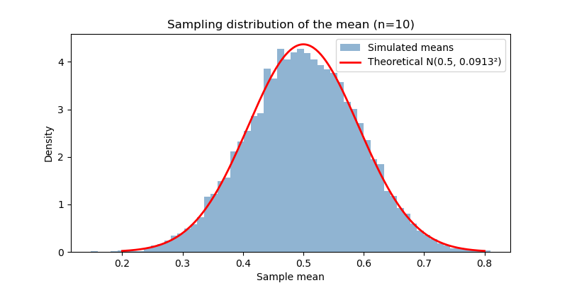
We compute the normal PDF manually using the formula \(f(x) = \frac{1}{\sigma\sqrt{2\pi}} e^{-\frac{(x-\mu)^2}{2\sigma^2}}\). Overlaying it on the histogram checks whether the Normal approximation is good for the chosen sample_size.
Distribution of the OLS slope
To simulate the distribution of an OLS slope, we need to generate \(n\) draws of (x, y) pairs, fit a regression to this sample, record the slope, and repeat this \(N\) times.
Generate data with broadcasting
N_simulations = 1000
n_sample_size = 20
true_slope = 0.5
true_intercept = 1.0
noise = 0.5
x = np.random.normal(0, 1, (N_simulations, n_sample_size))
eps = np.random.normal(0, noise, (N_simulations, n_sample_size))
y = true_intercept + true_slope * x + eps
Here true_slope * x multiplies every element of the matrix x by the scalar true_slope. This is called broadcasting: numpy automatically extends scalar operations to match the shape of the array. In a later lecture we come back to broadcasting in numpy because it is very powerful feature.
Compute OLS slops
The OLS slope formula for a simple regression is \(\hat\beta_1 = \frac{\sum(x_i - \bar x)(y_i - \bar y)}{\sum(x_i - \bar x)^2}\). We can compute this for all simulations at once:
x_c = x - x.mean(axis=1, keepdims=True)
y_c = y - y.mean(axis=1, keepdims=True)
slopes_hat = (x_c * y_c).sum(axis=1) / (x_c ** 2).sum(axis=1)
The argument keepdims=True ensures the mean has shape (N_simulations, 1) instead of (N_simulations,), so that subtracting it from the (N_simulations, sample_size) matrix x broadcasts correctly.
We plot the distribution of estimated slopes (histogram) and the theoretical distribution. If you do not know the theoretical distribution of OLS slopes; do not worry: we use simulations in these lectures, not theoretical results. If you do know the distribution of OLS slopes: why do we plot a normal distribution and not a Student \(t\) distribution?
# Histogram of estimated slopes
plt.hist(slopes_hat, bins=50, density=True, alpha=0.65, color="coral",
label="Estimated slopes $\hat \\beta_1$")
plt.axvline(true_slope, color="k", lw=2, linestyle="--",
label=f"True slope = {true_slope:.1f}")
x_hist_range = np.linspace(slopes_hat.min() - 0.2, slopes_hat.max() + 0.2, 300)
slope_se = noise / np.sqrt(n_sample_size)
normal_slope_pdf = (
(1.0 / (slope_se * np.sqrt(2 * np.pi)))
* np.exp(-0.5 * ((x_hist_range - true_slope) / slope_se) ** 2)
)
plt.plot(x_hist_range, normal_slope_pdf, "b-", lw=2,
label=f"Theoretical N({true_slope:.1f}, {slope_se:.3f}²)")
plt.xlabel("Estimated slope $\hat \\beta_1$")
plt.ylabel("Density")
plt.title("Distribution of OLS slope estimator")
plt.legend(fontsize=8)
plt.tight_layout()
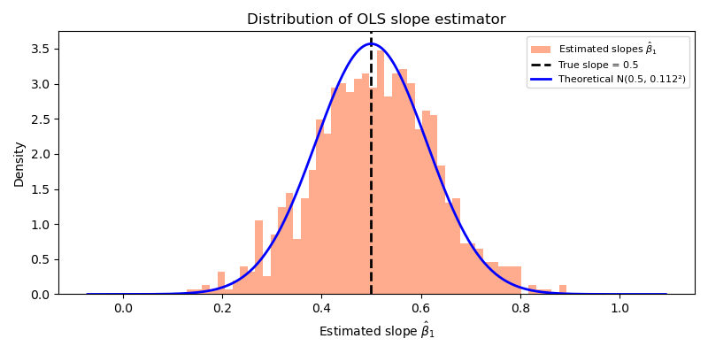
Bootstrapping
Generate two groups
We generate the \(A\) sample from a normal distribution. The \(B\) sample is \(\delta \in \langle 0,1]\) from the \(A\) sample. Hence we know that \(\mu_B \leq \mu_A\) (with probability 1.0). Note that we generate these \(A\) and \(B\) samples once. Above we generated these samples \(N\) times; but here we generate the repetitions in a different way.
sample_size = 50
delta = 0.95 # B = A * delta; delta < 1 means B is lower than A
A = np.random.normal(10, 1, sample_size)
B = A * delta
observed_difference = A.mean() - B.mean()
print(f"The observed difference equals {observed_difference:.2f}")
The observed difference equals 0.51
Combine the samples
Under the null hypothesis (\(H_0\): both groups come from the same distribution); in other words, the group labels are arbitrary. We combine the two samples:
AB = np.concatenate([A, B])
Run the permutation test
We randomly relabel the combined sample N_boot times and record the difference in means each time. Using np.random.choice we generate a matrix with labels for the permutation. To see what this function does, check out np.random.choice(5,size=(15,10),replace=True). Also try replace=False and see what happens.
For each of the \(N\) repetitions (which are in rows, axis = 0), we calculate the difference in means between the labelled \(A\) and labelled \(B\) samples.
N_boot = 10000
rng = np.random.default_rng()
perm_indices = np.random.choice(sample_size,size=(N_boot,2*sample_size),replace=True)
boot_diff = (AB[perm_indices[:, :sample_size]].mean(axis=1)
- AB[perm_indices[:, sample_size:]].mean(axis=1))
AB[perm_indices[:, :sample_size]] uses fancy indexing: for each of the N_boot rows we select sample_size elements of AB according to the permuted indices. In a later lecture we come back to fancy indexing.
Compute the p-value
p_value = np.mean((boot_diff) >= (observed_difference))
print(f"p-value: {p_value:.4f}")
p-value: 0.0063
(boot_diff) >= (observed_difference) produces a boolean array; taking its mean gives the fraction of bootstrap differences that are at least as extreme as the observed one. That fraction is the (one-sided) p-value.
OLS from scratch: the optimization approach
The final topic of this lecture (with statistical concepts you have probably seen before) is OLS. Above we use the analytical expression for the slope of a simple regression (i.e. only one independent variable): \(\hat\beta_1 = \frac{\sum(x_i - \bar x)(y_i - \bar y)}{\sum(x_i - \bar x)^2}\). The same result can be obtained by minimizing the mean squared error loss function directly. This is useful because the loss function can later be extended with penalty terms to give ridge or lasso.
Generate data
from scipy import optimize
sample_size = 500
slope1 = -3.0
slope2 = 2.0
constant = 1.0
noise = 1.5
x1 = np.random.normal(0, 1, sample_size)
x2 = np.random.normal(0, 1, sample_size)
y = constant + slope1 * x1 + slope2 * x2 + noise * np.random.normal(0, 1, sample_size)
Define the OLS loss
The OLS estimator minimizes the mean squared error:
\[ L(w) = \frac{1}{n} \sum_{i=1}^n \bigl(w_0 + w_1 x_{1i} + w_2 x_{2i} - y_i\bigr)^2 \]
def loss_ols(w):
predictions = w[0] + w[1] * x1 + w[2] * x2
return np.mean((predictions - y) ** 2)
Minimize the loss
result = optimize.minimize(loss_ols, x0=[0.0, 0.0, 0.0])
print("Estimated coefficients:", result.x)
Estimated coefficients: [ 1.00394757 -2.96011743 2.05995201]
optimize.minimize starts from the initial guess x0 and finds the values of w that minimize loss_ols. You should recover values close to constant=1, slope1=-3, and slope2=2.
Ridge and lasso penalties
Ridge and lasso add a penalty on the coefficients to the loss function. This discourages the model from assigning large coefficients to variables that have little predictive power; a problem that becomes serious when you have many variables.
Ridge uses a squared penalty:
lam = 1.0
def loss_ridge(w):
predictions = w[0] + w[1] * x1 + w[2] * x2
mse = np.mean((predictions - y) ** 2)
penalty = lam * np.sum(w[1:] ** 2) # do not penalise the intercept
return mse + penalty
Lasso uses an absolute-value penalty:
def loss_lasso(w):
predictions = w[0] + w[1] * x1 + w[2] * x2
mse = np.mean((predictions - y) ** 2)
penalty = lam * np.sum(np.abs(w[1:]))
return mse + penalty
The key difference: lasso can shrink coefficients exactly to zero (performing variable selection), while ridge only shrinks them toward zero. Experiment with different values of lam to see the effect. We will come back to ridge and lasso regression in the next lecture.
Summary
In this lecture we introduced statistical simulation as a practical complement to analytical theory. We illustrated the Central Limit Theorem by plotting sampling distributions of the mean, and showed that OLS slope estimates also have a distribution that widens with noise and narrows with sample size.
We then implemented bootstrap hypothesis testing: by repeatedly reshuffling a combined sample under the null hypothesis, we obtained a p-value without any distributional assumption. Finally, we implemented OLS as a numerical optimization problem and extended it to ridge and lasso by adding penalty terms to the loss function.
When theory gives no closed-form answer -- which is the norm in machine learning -- simulation fills the gap. Generating your own data and running an experiment thousands of times is a reliable way to build intuition about uncertainty, bias, and the effects of model choices.
Vectorised
numpy operations replace explicit Python loops and are orders of magnitude faster. The idioms introduced here -- 2D random arrays, axis reductions, broadcasting, and fancy indexing -- reappear throughout the rest of the course.
Looking ahead: In the next lecture we consider the issue of variable selection and causal interpretation of coefficients.
Review Questions
Test your understanding. For each question, write the code in your own marimo notebook.
TODO review questions:
- plot std of mean(x) against \(\sigma/\sqrt(n)\)
- test signif. of slope with bootstrapping; how can we bootstrap under null hypoth. that slope equals 0
- plot the separate ols lines from the first app
Question 1: Distribution of the sample standard deviation
Above we looked at the distribution of the sample mean. The sample standard deviation \(s\) also has a distribution.
a. Using the same setup as in section Simulating sampling distributions, simulate the distribution of \(s\) across N_simulations samples. Plot its histogram.
b. What is the probability that \(s < 0.28\)? Compute this from the simulated distribution.
c. How does the shape of the distribution of \(s\) change as you increase sample_size? Is it symmetric?
Hint
click here
- Replace
means = samples.mean(axis=1)withstds = samples.std(axis=1, ddof=1). The argumentddof=1gives the unbiased estimator. np.mean(stds < 0.28)gives the fraction of simulated standard deviations below 0.28.
Question 2: OLS with correlated predictors
In the data-generating process above, x1 and x2 are independent. Now generate correlated predictors:
x1 = np.random.normal(0, 1, sample_size)
x2 = 0.8 * x1 + np.sqrt(1 - 0.8**2) * np.random.normal(0, 1, sample_size)
y = constant + slope1 * x1 + 3 * np.random.normal(0, 1, sample_size)
a. Minimise the OLS loss with this correlated x2. How do the estimated coefficients change?
b. Simulate the distribution of the estimated slope on x1 for 1000 repetitions. How does correlation between x1 and x2 affect the spread of this distribution?
Question 3: Ridge regression and variable selection
Use the setup from [BROKEN LINK: *OLS from scratch: the optimisation approach] but now generate five predictors, of which only two have a non-zero true coefficient:
n = 200
X = np.random.normal(0, 1, (n, 5)) # five predictors
true_w = np.array([1.0, -3.0, 0.0, 0.0, 0.0])
y = X @ true_w + np.random.normal(0, 1, n)
a. Minimise the OLS loss. Do the estimated coefficients for the irrelevant predictors come out exactly zero? b. Minimise the ridge loss with \(\lambda = 1\). How does the result differ? c. Minimise the lasso loss with \(\lambda = 0.1\). Are any coefficients exactly zero?
Hint
click here
- The loss function now takes a vector
wof length 5 and computesX @ wfor the predictions. - For lasso the gradient of
|w|is undefined at zero, soscipy.optimize.minimizemay not converge cleanly. Try the method'L-BFGS-B'which handles bounds and subgradients better.
Question 4: One-sided vs two-sided bootstrap test
The bootstrap test we implemented is two-sided: we ask whether \(|D_\text{boot}| \geq |D_\text{obs}|\). In some situations we have a directional hypothesis — for instance, we expect \(A > B\).
a. Adapt the p-value computation to compute a one-sided p-value that tests whether the mean of \(A\) is specifically larger than the mean of \(B\). b. For a fixed \(\delta = 0.95\) and \(n = 50\), run the test 200 times and record the one-sided p-value each time. What fraction of tests reject at the 5% level? Is this what you expect?
Question 5: Bootstrap confidence interval
Instead of a hypothesis test, you can also use the bootstrap to construct a confidence interval for the difference in means.
a. From the 10,000 bootstrap differences you computed, extract the 2.5th and 97.5th percentiles. This gives a 95% bootstrap confidence interval for the difference. b. Does this interval contain zero when \(\delta = 1\)? What about when \(\delta = 0.90\)?
Hint
click here
np.percentile(boot_diff, [2.5, 97.5])gives the two endpoints of the interval.- This is the percentile bootstrap CI. It is conceptually simple but there are more accurate variants (BCa, studentised) that you can explore if interested.
Lecture 2: Variable selection and causality
Skills you learn in this lecture: recognizing that significance is not a variable selection criterion, reading and reasoning with directed acyclic graphs (DAGs), simulating fork, pipe, and collider structures in Python to see how controlling for variables changes OLS estimates.
Learning Objectives
After completing this lecture you should be able to:
- explain why significance is not a valid criterion for selecting variables
- define a directed acyclic graph (DAG) and use it to describe a causal structure
- distinguish fork, pipe, and collider structures and state which variables should (not) be controlled for in each case
- simulate fork, pipe, and collider data in Python using
numpy - compute OLS coefficients for simple and multiple regressions from scratch and interpret how they change when a control variable is added or removed
Introduction
In your statistics and econometrics courses you have learned that OLS measures correlations. A regression coefficient tells you how \(Y\) changes with changing values for \(X\), but it does not say whether there is a causal relationship. In economics, causal questions matter enormously: if you advise the government to adopt policy \(X\) because it will raise \(Y\), you need to be sure that \(X\) actually causes \(Y\), not just that the two are correlated.
Two common but mistaken shortcuts that researchers use when they move from correlations to causal claims are the following.
First, some people select control variables based on statistical significance: add a variable, check whether it is significant, keep it if yes. The xkcd cartoon in Figure ref:fig:significance_xkcd illustrates the absurdity of this approach. If you test 20 unrelated variables at the 5% level, you expect one to appear significant purely by chance. The first app in this lecture lets you explore this multiple testing problem directly.

Figure 1: Significance cannot be used for variable selection (in case you need an explanation).
Second, and more subtly, even if you have the right variable in mind as a control, adding it to a regression can either fix a problem or make it dramatically worse; depending on the causal structure. A third variable \(Z\) can play three fundamentally different roles:
- the fork — \(Z\) causes both \(X\) and \(Y\); failing to control for \(Z\) creates a spurious correlation between \(X\) and \(Y\)
- a simple example is the correlation between the consumption of ice cream and the number of people drowned on a given day; can you guess what \(Z\) is here?
- the pipe — \(Z\) mediates the causal effect of \(X\) on \(Y\); controlling for \(Z\) blocks the causal path you are trying to measure
- an economic example: you want to know the effect of education on income; should you control for (un)employment?
- the collider — both \(X\) and \(Y\) cause \(Z\); controlling for \(Z\) induces a spurious correlation between \(X\) and \(Y\) where none existed
- suppose running \(X\) and cycling \(Y\) skills are uncorrelated in the student population; let \(Z\) denote membership of the university’s elite duathlon team. What is the correlation between \(X\) and \(Y\) conditional on \(Z\)? Hint: consider a team member with low \(X\).
- as the collider is the least intuitive of the three, below we analyze two more examples; one with simulated and one with real data.
Each of these three structures is represented by a directed acyclic graph (DAG): a diagram with variable names as nodes and arrows showing the direction of causation. The second app lets you switch between the three DAG types and see how the OLS coefficient of \(X\) changes when you add \(Z\) to the regression.
Apps
This lecture has two interactive apps. The first demonstrates the multiple testing problem. The second shows the fork, pipe, and collider structures and lets you observe how adding a control variable \(Z\) to the regression changes the estimated effect of \(X\) on \(Y\).
Significance and variable selection
All \(k\) variables in this app are generated independently of \(Y\) — none has a true effect. Nevertheless, some will appear significant at the chosen \(\alpha\) level just by chance. The histogram shows the distribution of t-statistics across all \(k\) regressions; the red lines mark the critical values. The bar chart on the right compares the expected number of false discoveries (\(\alpha \times k\)) with the number actually observed. Increase \(k\) to 100 or 200 to see how many spurious findings accumulate.
Fork, pipe, and collider
Select a DAG type from the dropdown and watch the bar chart on the right. The two bars show the OLS coefficient of \(X\) from a bivariate regression (\(Y \sim X\)) and from a multiple regression that also includes \(Z\) (\(Y \sim X + Z\)). The t-statistics are shown in the chart title. The callout below the chart gives the interpretation: for the fork, controlling for \(Z\) is the right thing to do; for the pipe and the collider, it is not.
Increase the effect strength \(\gamma\) to make the bias more visible, or reduce the sample size to see how estimation uncertainty interacts with the bias.
Python Code Explanation
In this section we explain the key ideas behind the two apps. Open a marimo notebook alongside this document and type the code yourself.
We focus on the statistical logic — how to simulate each causal structure and how to compute OLS coefficients from scratch. The interactive elements (sliders etc.) in the apps are added on top of this code.
Multiple testing
Simulate many “null variables”
We generate \(k\) variables that have no effect on \(Y\) and run a multiple regression of \(Y\) on all \(k\) variables. The matrix \(\mathbf{X}\) has shape \((n,\, k+1)\): \(n\) observations in our (simulated) sample, a column of ones for the intercept and one column per variable.
import numpy as np
n, k = 100, 50
Y = np.random.normal(0, 1, n)
X = np.random.normal(0, 1, (n, k))
Compute t-statistics for the multiple regression
OLS gives \(\hat\beta = (\mathbf{X}^\top \mathbf{X})^{-1} \mathbf{X}^\top Y\) and the covariance matrix of \(\hat\beta\) is \(\hat\sigma^2 (\mathbf{X}^\top \mathbf{X})^{-1}\) where \(\hat\sigma^2 = \text{RSS}/(n - k - 1)\) and \(RSS\) denotes Residual Sum of Squares.
For ease of reference we provide the shape of the vector/matrix in a comment on the same line. In a later lecture we come back to matrix operations like multiplication @, transform T, solve and inv.
Xmat = np.column_stack([np.ones(n), X]) # (n, k+1)
beta = np.linalg.solve(Xmat.T @ Xmat, Xmat.T @ Y) # (k+1,)
resid = Y - Xmat @ beta # (n,)
sigma2 = np.sum(resid ** 2) / (n - k - 1) # df = n - k - 1
cov_beta = sigma2 * np.linalg.inv(Xmat.T @ Xmat) # (k+1, k+1)
se = np.sqrt(np.diag(cov_beta)) # (k+1,) standard errors
t_stats = beta[1:] / se[1:] # (k,); slopes only
The vector t_stats holds one t-statistic per variable, each testing \(H_0: \beta_j = 0\). Under the null, each \(t_j \sim t_{n-k-1}\); for \(n = 100\) and \(k = 50\) the critical value at 5\% is approximated by 1.96.
n_significant = np.sum(np.abs(t_stats) > 1.96)
print(f"{n_significant} out of {k} variables are 'significant' at 5%")
print(f"Expected: {0.05 * k:.1f}")
4 out of 50 variables are 'significant' at 5% Expected: 2.5
Every significant result here is a false discovery — by construction.
Distribution of false discoveries across repetitions
One run gives one draw from the distribution of false discoveries. To see the full distribution we repeat the simulation \(N = 10{,}000\) times and record the number of significant variables for each draw.
N = 10_000
counts = np.empty(N, dtype=int)
for i in range(N):
Yi = np.random.normal(0, 1, n)
Xi = np.random.normal(0, 1, (n, k))
Xmat_i = np.column_stack([np.ones(n), Xi])
beta_i = np.linalg.solve(Xmat_i.T @ Xmat_i, Xmat_i.T @ Yi)
resid_i = Yi - Xmat_i @ beta_i
s2_i = np.sum(resid_i ** 2) / (n - k - 1)
se_i = np.sqrt(np.diag(s2_i * np.linalg.inv(Xmat_i.T @ Xmat_i)))[1:]
counts[i] = int(np.sum(np.abs(beta_i[1:] / se_i) > 1.96))
None
Because each t-test is approximately independent and rejects with probability \(\alpha = 5\%\) under the null, the count of significant variables follows a \(\text{Binomial}(k,\, \alpha)\) distribution with mean \(k\alpha\) and variance \(k\alpha(1-\alpha)\).
from scipy.stats import binom
import matplotlib.pyplot as plt
alpha = 0.05
xs = np.arange(counts.max() + 2)
sim_probs = np.array([(counts == x).mean() for x in xs])
binom_probs = np.array([binom.pmf(x,k,alpha) for x in xs])
fig, ax = plt.subplots(figsize=(8, 4))
ax.bar(xs - 0.2, sim_probs, width=0.35, alpha=0.75,
color="steelblue", label=f"Simulated ({N:,} runs)")
ax.bar(xs + 0.2, binom_probs, width=0.35, alpha=0.75,
color="coral", label=f"Binomial({k}, {alpha})")
ax.set_xlabel(f"Number of 'significant' variables out of k = {k}")
ax.set_ylabel("Probability")
ax.set_title("Distribution of false discoveries — simulation vs. Binomial")
ax.legend()
plt.tight_layout()
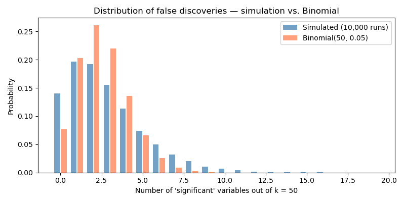
Simulating fork, pipe, and collider
For all three structures it is convenient to define a helper function that computes OLS coefficients for a simple or multiple regression using numpy linear algebra. As above, the matrix \(\mathbf{X}\) starts with a column of ones (the intercept) and the predictor columns. The estimated coefficients are given by \(\hat\beta = (\mathbf{X}^\top \mathbf{X})^{-1} \mathbf{X}^\top Y\).
def ols(Y, *Xs):
"""Return OLS coefficient vector [intercept, beta_1, ...]."""
Xmat = np.column_stack([np.ones(len(Y))] + list(Xs))
return np.linalg.solve(Xmat.T @ Xmat, Xmat.T @ Y)
The fork
\(Z\) causes both \(X\) and \(Y\); there is no direct effect from \(X\) to \(Y\).
As mentioned in the app: if there is an effect between two variables, we assume the effect equals \(\gamma\). Here we set \(\gamma = 1\).
n = 1000
gamma = 1.0
Z = np.random.normal(0, 1, n)
X = gamma * Z + np.random.normal(0, 1, n) # Z causes X
Y = gamma * Z + np.random.normal(0, 1, n) # Z causes Y
coef_without_z = ols(Y, X) # Y ~ X: biased
coef_with_z = ols(Y, X, Z) # Y ~ X + Z: correct
print(f"Y ~ X: coef of X = {coef_without_z[1]:.3f}")
print(f"Y ~ X + Z: coef of X = {coef_with_z[1]:.3f}")
Y ~ X: coef of X = 0.454 Y ~ X + Z: coef of X = -0.020
The bivariate regression picks up the spurious correlation created by \(Z\). Adding \(Z\) removes it.
The pipe
\(X\) causes \(Z\) which causes \(Y\); the causal effect of \(X\) on \(Y\) is fully mediated by \(Z\).
X = np.random.normal(0, 1, n)
Z = gamma * X + np.random.normal(0, 1, n) # X causes Z
Y = gamma * Z + np.random.normal(0, 1, n) # Z causes Y
coef_without_z = ols(Y, X) # correct
coef_with_z = ols(Y, X, Z) # incorrect
print(f"Y ~ X: coef of X = {coef_without_z[1]:.3f} (true total effect ~ {gamma**2:.2f})")
print(f"Y ~ X + Z: coef of X = {coef_with_z[1]:.3f} (mechanism is blocked)")
Y ~ X: coef of X = 1.091 (true total effect ~ 1.00) Y ~ X + Z: coef of X = 0.069 (mechanism is blocked)
An economic example: the effect of schooling on income is partly mediated through employment: schooling helps you to find employment. Controlling for employment makes schooling look less relevant, but the real effect exists; it works through employment.
The collider
\(X\) and \(Y\) are independent. Both cause \(Z\). Conditioning on \(Z\) induces a spurious negative correlation between \(X\) and \(Y\).
X = np.random.normal(0, 1, n)
Y = np.random.normal(0, 1, n)
Z = gamma * X + gamma * Y + np.random.normal(0, 1, n)
coef_without_z = ols(Y, X) # correct
coef_with_z = ols(Y, X, Z) # wrong
print(f"Y ~ X: coef of X = {coef_without_z[1]:.3f} (correct, near zero)")
print(f"Y ~ X + Z: coef of X = {coef_with_z[1]:.3f} (spurious negative!)")
Y ~ X: coef of X = 0.018 (correct, near zero) Y ~ X + Z: coef of X = -0.484 (spurious negative!)
The intuition: if we hold \(Z = \gamma X + \gamma Y\) fixed, then a higher \(X\) must be offset by a lower \(Y\) to keep \(Z\) constant. So within any slice of \(Z\), \(X\) and \(Y\) are negatively correlated which is a pure artifact of conditioning.
Finally, we consider the collider in two situations where there is correlation between \(X\) and \(Y\): first with simulated and then with real data.
collider bias with simulated data
Many people have the intuition that adding a control variable to a regression (especially when it turns out to be significant) is a good idea. However, this intuition is wrong if it is applied without thinking. The pipe and collider above are examples where this reasoning is incorrect. Here we consider a collider in a more elaborate example.
We use here the education example by McElreath (2020) to illustrate this point (see Richard McElreath ’s lecture 6). Consider the educational achievements of three generations in one family: the grandparent, the parent and the (grand)child. We are interested in the effect of the grandparent’s education on the educational achievement of the grandchild.
Let’s denote the child’s educational achievement by \(Y\) (the variable we are interested in) and the grandparent’s education \(X\). We want to understand the effect of \(X\) on \(Y\). Clearly there is the following path: more educated grandparent leads to more educated parent (\(Z\)) which, in turn, leads to more educated grandchild. The thing we are interested in is whether there is a direct effect from the grandparent on the child, controlling for the parent’s education.
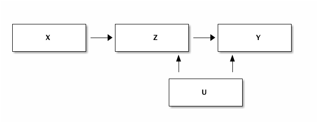
Figure 2: A collider in a more complicated context.
We know that the parent’s education has a positive effect on the child’s achievement. A more educated parent will tend to stimulate their children more, can help with homework etc. In the data that we generate below, we assume that \(Z = X + ...\) and \(Y = Z + ...\). That is, we assume that the parent’s education feeds one-to-one into the child’s education.
Is it the case that on top of this effect there is a separate grandparent effect? E.g. because the grandparent is babysitting and a more educated grandparent reads Hamlet with the 5 year old grandchild. That is fun and can boost the child’s educational achievement.
Another important component of education is the neighbourhood where the
child grows up. We denote this variable \(U\). In the code we assume
that the parent and child grow up in the same neighbourhood (have the
same \(U\) effect). \(U\) is drawn from a standard normal distribution
and the effect on education is given through a multiplication by the
factor alpha.
In addition to this, we assume that there is a random component as well which differs between parent and child.
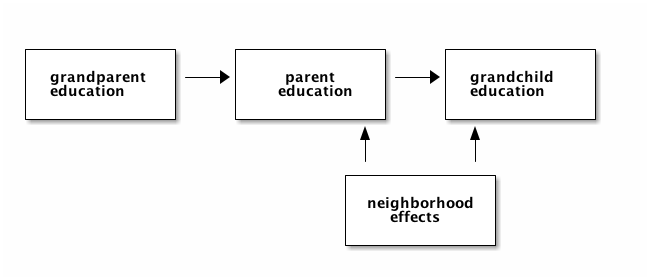
Figure 3: The education example from McElreath (2020).
The code below, generates this data and a dataframe df_collider that
stores this data.
Look carefully at the code: is there a direct effect from the grandparent to the grandchild’s educational achievement?
We create the dataframe df_collider which contains the observable variables \(X,Y,Z\) and the unobserved neighbourhood effect \(U\).
import pandas as pd
import statsmodels.formula.api as smf
sample_size = 5000
alpha = 0.5
X = np.random.normal(size=sample_size)
U = np.random.normal(size=sample_size)
Z = X + alpha*U+0.4*np.random.normal(size=sample_size)
Y = Z + alpha*U+0.4*np.random.normal(size=sample_size)
df_collider = pd.DataFrame({'X':X, 'Y':Y, 'Z':Z, 'U':U})
print(df_collider.head())
X Y Z U
0 0.004069 -2.603567 -1.244448 -2.173826
1 0.383663 -0.350389 0.125116 -0.755560
2 -1.539065 -0.910385 -1.668699 0.770156
3 0.129300 0.430064 0.863400 -0.128971
4 1.076587 2.027661 1.898336 1.184124
Now we run the regression of \(Y\) on \(X\) controlling for \(Z\).
results = smf.ols('Y ~ X + Z', data=df_collider).fit()
print(results.summary())
OLS Regression Results
==============================================================================
Dep. Variable: Y R-squared: 0.889
Model: OLS Adj. R-squared: 0.889
Method: Least Squares F-statistic: 2.011e+04
Date: Tue, 29 Sep 2026 Prob (F-statistic): 0.00
Time: 13:20:24 Log-Likelihood: -3727.7
No. Observations: 5000 AIC: 7461.
Df Residuals: 4997 BIC: 7481.
Df Model: 2
Covariance Type: nonrobust
==============================================================================
coef std err t P>|t| [0.025 0.975]
------------------------------------------------------------------------------
Intercept 0.0107 0.007 1.487 0.137 -0.003 0.025
X -0.6131 0.013 -45.863 0.000 -0.639 -0.587
Z 1.6152 0.011 142.881 0.000 1.593 1.637
==============================================================================
Omnibus: 0.695 Durbin-Watson: 1.936
Prob(Omnibus): 0.706 Jarque-Bera (JB): 0.737
Skew: -0.010 Prob(JB): 0.692
Kurtosis: 2.944 Cond. No. 3.52
==============================================================================
Notes:
[1] Standard Errors assume that the covariance matrix of the errors is correctly specified.
It turns out that grandparent education \(X\) has a negative effect on the grandchild’s educational achievement \(Y\). How is that possible?
To illustrate what is happening, we use an interactive plot made with altair.
To condition on Z (as we do in a multiple regression), we can drag vertically an interval for \(Z\) in the bottom histogram. This selection of \(Z\) turns blue in the scatter plot above and you can drag the selection up and down (conditioning on different values of \(Z\)).
Move this selection up and down and see what happens. In particular:
- for a selection of
Zin the bottom histogram, what is the relation betweenXandYin the scatter plot? - for this selection, how does
Uvary in the figure? That is, for a given selection of \(Z\) what is the size of the circles? What is the interpretation? For given \(Z\), as grandparent education \(X\) is low, what is the size of the \(U\) circles?
import altair as alt
interval = alt.selection_interval(encodings=['y'])
fig = (
alt.Chart(df_collider)
.mark_point()
.encode(
x='X',
y='Y',
color=alt.condition(
interval,
alt.value('steelblue'),
alt.value('lightgreen')
),
size='U'
)
.add_params(interval)
)
hist = (
alt.Chart(df_collider)
.mark_bar()
.encode(
x='count()',
y=alt.Y('Z', bin=True),
color=alt.condition(
interval,
alt.value('steelblue'),
alt.value('lightgrey')
)
)
.add_params(interval)
)
chart_collider = fig & hist
chart_collider.save('./figures/ChartCollider.html')
collider bias with real data
Downey (2023, chap. 7) discusses a great example of collider bias suggesting (incorrectly) that mothers who smoke during pregnancy have a “protective effect” on their babies if these happen to have low birth weight.
- you can watch his presentation: probably overthinking low birthweight paradox
- or look at the notebook: https://allendowney.github.io/ProbablyOverthinkingIt/birthweight.html
- the website of the book: https://greenteapress.com/wp/probably-overthinking-it/
If you want to run this code on the Tilburg university server, you can access the data with:
from zipfile import ZipFile
zip_file = ZipFile('./data/lbw_data.csv.zip')
df = pd.read_csv(zip_file.open('lbw_data.csv'))
df.head()
Unnamed: 0 tobacco birthweight mort lbw bin 0 0 2.0 3505.0 False False (3500, 3750] 1 1 2.0 2940.0 False False (2750, 3000] 2 2 2.0 2693.0 False False (2500, 2750] 3 3 1.0 2778.0 False False (2750, 3000] 4 4 2.0 3175.0 False False (3000, 3250]
Then follow Allen Downey’s presentation/notebook/book chapter.
Summary
This lecture introduced two practical pitfalls in variable selection and causal interpretation.
The multiple testing problem shows that significance is not a reliable guide to variable selection: if you test many variables, some will appear significant by chance, with an expected false-discovery rate of exactly significance level \(\alpha\).
The fork, pipe, and collider show that whether to control for a third variable \(Z\) depends entirely on the causal structure. Controlling for a fork variable is correct. Controlling for a pipe mediator or a collider is incorrect; it either blocks a causal path or introduces a spurious correlation that was not there before.
Significance of a coefficient does not mean the variable belongs in your model. Variable selection should be guided by your causal model (the DAG), not by p-values.
np.linalg.solve(X.T @ X, X.T @ y) computes the OLS coefficient vector in one line for any number of predictors. The same matrix operations that worked for simple regression scale directly to multiple regression.
Looking ahead: In the next lecture we cover a number of “technical” Python topics that we need for later lectures on datascience methods.
Review Questions
Test your understanding. For each question, write the code in your own marimo notebook.
Question 1: False discovery rate
Repeat the multiple testing simulation but now generate \(k\) variables where exactly half have a true slope of 0.5 (and half are null).
a. What fraction of the true-effect variables do you correctly detect (power)? b. Among the “significant” results, what fraction are false discoveries? c. How does the false-discovery fraction change as you increase \(k\) while keeping the number of true signals fixed?
Question 2: Fork with partial effect
In the fork simulation above, \(X\) has no direct effect on \(Y\). Now add a direct effect:
Y = 0.5 * X + gamma * Z + np.random.normal(0, 1, n)
a. What coefficient do you expect for \(X\) in the regression \(Y \sim X\) (without controlling for \(Z\))? b. What coefficient do you expect for \(X\) in the regression \(Y \sim X + Z\)? c. Run both regressions and check whether the simulated coefficients match your expectations.
TODO Question 3: Costly data acquisition
Suppose you work at a ministry and you and your team need to figure out what the effect is of a policy \(x\) on an outcome \(y\). You can gather data on this relation between \(x\) and \(y\) but the problem is that the data acquisition is rather expensive. Hence, your colleagues suggest that you gather data sequentially (over time) until you find that the coefficient of \(x\) (on \(y\)) is significant.
Hopefully, in your statistics/econometrics classes you learned that this is a very bad idea. If not, I tell you: this is a bad idea.
Use data simulation to convince your colleagues that collecting data in this way is a bad idea.
TODO Question 4: Treatment effects
One of the complications when using IV to find causal effects is that treatment effects can differ between subgroups and that these subgroups react differently to the treatment/instrument. Our discussion here is based on Chapter 4 of Angrist and Pischke (2009).
We will consider this in the context of unemployed who are offered a training program. To understand the effects, we will again generate our own data such that we know exactly what all the relevant effects are. The question is then, how do we get these effects from the data.
As before, the learning goals of this section are two fold: (i) learn how to program your own data generating process in python and (ii) understand the statistical issue under considerarion: heterogenous treatment effects.
The government introduces a training program for unemployed. The treatment variable \(D_i\) denotes whether (1) or not (0) individual \(i\) received training. The instrument \(Z_i\) that we use is whether (1) or not (0) \(i\) is invited to join the training.
We have three groups of unemployed:
- compliers join the training if and only if they are invited to do so: \(D_i = 1 (0)\) iff \(Z_i = 1 (0)\);
- always-takers join the training whether or not they are invited to do so: \(D_i =1\) irrespective of \(Z_i\);
- never-takers never join the training: \(D_i = 0\) irrespective of \(Z_i\).
Note that in this training context, the always-takers are a bit “odd”: how can you join a training program where you are not supposed to be. The never-takers make more sense in this context: some people may not attend the training even though they were invited to do so. We will not worry about this; the point is that we can conceptually distinguish these groups.
We are interested in the effect of the training program on earnings. We denote by \(\beta\) the expected earnings without training. The expected earnings with training is denoted by \(\beta+\tau\). Hence, \(\tau\) denotes the treatment effects.
Let \(j \in \{c,a,n \}\) denote whether an individual is a complier, always-taker or never-taker. We assume that \(\beta_j\) and \(\tau_j\) vary with \(j\).
In particular we assume that the earnings effect for someone in group \(j\) is drawn from a normal distribution with mean \(\mu = \beta_j\) and standard deviation \(\sigma =1\) in case of no training and the effect of training is drawn from a normal distribution with mean \(\mu = \tau_j\) and standard deviation \(\sigma =1\).
Below we will consider different configurations for \(\beta_j, \tau_j\) and see how they affect the estimated effects.
Exercise Read the code below and explain what it does. E.g. can you explain how earnings depend on whether someone was invited for the training program?
```python def accept_complier(invited): return invited
def accept_always(invited): return np.ones_like(invited)
def accept_never(invited): return np.zeros_like(invited)
N_simulations = 10000 fraction_training = 0.2 # 20% of agents are invited to the training types = [’complier’,’always_taker’, ’never_taker’] β = {’complier’: 1, ’always_taker’: 2, ’never_taker’: 1} τ = {’complier’: 3, ’always_taker’: 4, ’never_taker’: 1} n = {’complier’: 0.5, ’always_taker’: 0.25, ’never_taker’: 0.25} accept = {’complier’: accept_complier, ’always_taker’: accept_always, ’never_taker’: accept_never} earnings_without = {} training_effect = {} earnings = {} invited = {} trained = {} df = pd.DataFrame() def data_simulation(β = β, τ=τ, n = n): for j in types: earnings_without[j] = np.random.normal(loc = β[j], scale = 1.0, size = int(n[j]*N_simulations)) training_effect[j] = np.random.normal(loc = τ[j], scale = 1.0, size = int(n[j]*N_simulations)) invited[j] = np.random.binomial(1,fraction_training,size = int(n[j]*N_simulations)) trained[j] = accept[j](invited[j]) earnings[j] = earnings_without[j]+ trained[j]*training_effect[j] column_invited = np.concatenate([invited[j] for j in types],axis=0) column_trained = np.concatenate([trained[j] for j in types],axis=0) column_earnings = np.concatenate([earnings[j] for j in types],axis=0) df = pd.DataFrame({’invited’:column_invited, ’trained’:column_trained,’earnings’:column_earnings}) return df
df = data_simulation() df.head() ```
We have a dataset now with indicators for who was invited to a training and who attended a training.
We would like to learn the effect of training on earnings.
Question Which of the parameters above could we hope to recover? \(\tau_c,\tau_a,\tau_n\)?
Question Hence, if we do some calculations with the data, which number do we want to see?
Question Compare the average earnings of people with training with the average earnings of people without training. Is this the number that you expected? Why (not)?
Exercise Where does this number come from?
Question Perhaps we should use the instrument whether someone is invited or not: compare average earnings of people with and without an invitation to the training.
Question Does it help if we compare:
- people with training and an invitation to training with
- people without training and no invitation to training
We have seen now that we have no hope of recovering the relevant training effect in the set-up above. So the question is: when can we recover the relevant parameters? That is, what assumptions are needed?
To see how you can analyze this with the set-up above, let’s program two obvious cases where this works.
Question Explain for each case why it works.
```python n = {’complier’: 1.0, ’always_taker’: 0.0, ’never_taker’: 0.0} df_compliers_only = data_simulation(n=n) np.mean(df_compliers_only[df_compliers_only.trained==1].earnings)-np.mean(df_compliers_only[df_compliers_only.trained==0].earnings) ```
```python β = {’complier’: 1, ’always_taker’: 1, ’never_taker’: 1} τ = {’complier’: 3, ’always_taker’: 3, ’never_taker’: 3} df_homog = data_simulation(β=β,τ=τ) np.mean(df_homog[df_homog.trained==1].earnings)-np.mean(df_homog[df_homog.trained==0].earnings) ```
For a less obvious case where we can retrieve relevant parameters, we will use Angrist and Pischke (2009: chapter 4). In particular, we will verify Theorem 4.4.2.
We work with one sided noncompliance. That is, we allow for never-takers but not for always-takers.
According to Theorem 4.4.2 the effect of treatment on the treated can be found as:
\[ \frac{E(Y_i|Z_i=1)-E(Y_i|Z_i=0)}{Prob(D_i=1|Z_i=1)} \]
We first create the dataframe.
```python n = {’complier’: 0.5, ’always_taker’: 0.0, ’never_taker’: 0.5} df_one_sided = data_simulation(n=n)
```
Question Calculate \(Prob(D_i = 1|Z_i =1)\) and denote this `correction_term`.
Question Calculate \(\frac{E(Y_i|Z_i=1)-E(Y_i|Z_i=0)}{Prob(D_i=1|Z_i=1)}\).
Question Which parameter have we recovered?
## Probability of treatment
Consider a situation which is simpler than the one above in the sense that there are no always-takers, nor never-takers.
However, now the instrument (“invited”) \(Z\) causes the probability of training to increase from 0.2 to 0.6. 30% of people get invited.
Exercise Copy/paste python code from the analysis above to generate a dataframe using that \(Z_i=1\) implies that the probability of treatment increases from 0.2 to 0.6
Exercise Suppose we can observe whether someone received training or not. Use this to calculate the effect of training on earnings.
Suppose we cannot observe whether someone actually did the training or not (e.g. whether or not someone invested effort in the training). We only know (“from a previous study”) that explicitly inviting someone for the training (“nudge”) increases the probability that they invest training effort from 0.2 to 0.6.
Exercise Use the dataframe above to verify what the effect of the nudge is. Call this the `correction_term`. What value should the correction term have?
Angrist and Pischke (2009: chapter 4) Theorem 4.4.1 (LATE Theorem; local average treatment effect) claims that (under some assumptions), we can calculate the effect of training on earnings as:
\[ \frac{E(Y_i|Z_i=1)-E(Y_i|Z_i=0)}{E(D_i|Z_i=1)-E(D_i|Z_i=0)} \]
Exercise Use this expression to calculate the effect of training on earnings.
Now we are going to use an IV estimation to find the same result. Run the following two regressions.
```python results_first_stage = smf.ols(’trained ~ invited’, data=df_prob).fit() results_second_stage = smf.ols(’earnings ~ invited’, data=df_prob).fit() ```
Exercise Use these regressions to calculate the effect of training on earning.
Hint
click here
np.cov(W, Y)[0, 1]gives the sample covariance between \(W\) and \(Y\).- For the first stage in 2SLS: use the
olsfunction from the Python Code Explanation section. The fitted values areX_hat = b[0] + b[1] * W. - The 2SLS estimator equals the IV estimator when there is exactly one instrument; they differ with multiple instruments.
Lecture 3: Tensors, broadcasting, indexing, matrix operations
In this lecture we consider a number of more technical aspects of datascience in Python:
- tensors
- broadcasting
- indexing
- matrix operations:
@, T, np.linalg.solve, .inv, np.diag - programming a regression in tensorflow: because we will use tensorflow for estimating neural networks, there is some advantage in understanding the tensorflow syntax a bit more.
In the past, when you worked with data, you would usually have 2-dimensional data: columns for the different variables and rows for the different observations. That is, the data is represented as a matrix.
However, “big data” is not necessarily structured in such a neat way. Data can have higher dimensions. We will start with data on images. An image has two dimensions of itself. Hence a dataset with images has 3 dimensions: one dimension for the identifier of the image and then x-y coordinates for the image itself.
If the dataset consists of movie-clips, we have an additional dimension: time.
In economics, when we look at GDP, our observation would be GDP of the UK in 2010, GDP of the UK in 2011, GDP of Belgium in 2010 etc. This can be represented as a matrix.
But now suppose we believe the development of GDP is important. Our observation would be GDP of the UK in 2010-2018. This gives 3 dimensional data. The observation is GDP in the period.
To deal with higher dimensional data, we need “tensors”. A tensor generalizes a matrix to higher dimensions.
We will now have a technical interlude to explain what tensors are and what you can do with them. We describe some functions that can be applied to tensors. To motivate these functions, we will build our first neural network. The point here is not so much to explain how neural networks work but more to show you that the functions we consider are going to be useful later on when we will try to understand neural networks more deeply.
Machine learning packages tend to have a “backbone” that implements tensors.
Tensors
- tensors are vectors/matrices that capture multidimensional data
- we tend to think in two dimensional tables (“excel”) but some phenomena have higher dimensions than 2
- a set of images, say we want to separate images of cats and dogs
- one observation has two dimensions (x and y axis), say I have 50*50 “pixels”
- if I have 3000 observations, my data has dimensions 3000*50*50
- you cannot do this in excel…
- to deal with such data in python, we need tensors
- we introduce tensors in
numpyand explain how you can work with them (e.g. add them together, multiply them) - this is different than with matrices:
- I can multiply an \(n*m\) and \(k*l\) matrix if and only if \(m=k\)
- this is not true for multiplying tensors
- an important concept with tensors is: broadcasting
- with tensors you will use (the attribute)
.shapea lot - you will learn how to select observations from a tensor using slicing and indexing
As mentioned, in most of the empirical analyses that you have done, an
observation is a one dimensional vector. E.g. you have data on
inflation, unemployment, gdp growth for country-year combinations. Then
for the UK in 2000, our data consists of the one dimensional vector
[inflation, unemployment, gdp growth]. If you have 100 observations
like this, you can represent them in a matrix. Each row is an
observation and the columns will be
[coutry, year, inflation, unemployment, gdp growth]. Hence we have a
two dimensional dataset with 100 rows and 5 columns.
In big data, there are usually higher dimension observations. One of the
“classic” datasets in machine learning is
the MNIST dataset.
This dataset consists of handwritten numbers and their corresponding
label (e.g. when the handwritten number is 5, the label for this image
5). We will see an example shortly. This called a classification
problem: based on a picture of the handwritten number, we need to
classify the pricture as being either 0, 1, …, 9.
The point is that a handwritten number is a two dimensional observation. For each x-y comination, we get the grey-scale of this point/pixel. To illustrate this, consider the 5th image from the training dataset (python starts numbering at 0); we plot the handwritten image (which is 2 dimensional) and print its label.
This data is already split in a train and test set. The idea is that we train our model on the train data and then use the test data (which the model has never seen before) to evaluate the fit of the model. We will elaborate on this below.
(train_images, train_labels), (test_images, test_labels) = datasets.mnist.load_data()
plt.imshow(train_images[4],cmap=plt.cm.binary)
plt.show()
print(train_labels[4])
If you want to “see” what the data look like, uncomment the next cell and evaluate it.
#train_images[4]
Indeed, the handwritten number is 9, which equals its label.
What are the dimensions for this dataset. Let’s use shape to find out.
Friendly warning, when you go into machine learning, you will be using
shape a lot!
train_images.shape
That is, we have 60,000 images in the train-set and each image is of the form 28 by 28 (pixels).
As an illustration, the dimensions of the first image in the dataset
train_images.
train_images[0].shape
Tensors in numpy
As mentioned, well known machine learning backends are theano and tensorflow. For reasons that we do not worry about here, these are not immediately straightforward to work with (but we have used some tensorflow already above). We can play around with dimensions in “good old” numpy as well. Properties that we can use in numpy, like broadcasting, can be used in theano and tensorflow as well.
As numpy is “more direct” to work with, we will practice this with numpy.
Remark Although you are always encouraged to play around with code to see what happens, this is especially the case with tensors. To familiarize yourself with tensors, change the code that we use below; e.g. create a 10 dimensional vector out of the data. You can check for yourself whether the code generates what you expect it to generate. If not, and you cannot figure out what happens, ask us!
First, we create the vector x with 100 random numbers.
x = np.random.normal(0,1,size=100)
Question Use shape to find the shape of the vector x.
As you can see, x has 100 elements in one dimension and no other
dimension. Put differently, x is one-dimensional as a tensor.
This we can verify using ndim:
x.ndim
Do not panic: The following sentence will be a bit confusing when you
first read it, but you will get used to it later. If you would plot the
vector x it would be a vector in a 100-dimensional space. Hence it
is a 100 dimensional vector, but a 1 dimensional tensor.
To understand this better, let’s consider a two dimensional (2D) tensor. This is what we usually call a matrix:
x2 = x.reshape(25,4)
print(x2.ndim)
print(x2.shape)
By evaluating x2 we see that this indeed “looks like” a matrix.
In terms of python, we can see the two dimensions as follows: * each row
has four elements (columns) separated by comma’s (,) in between square
brackets, like [1,2,3,4]; * then between square brackets, we have 25
of such rows; again rows separated by comma’s.
x2
Note how the reshape method turns the 100 elements of the
1-dimensional vector =x=into a matrix with 25 “rows” and 4 “columns”.
This matrix is 2-dimensional.
Question Create a 3-dimensional vector x3 out of x with shape 4 by
5 by 5. Check the dimensions and shape of x3.
One way to think about x3 is as four \(5*5\) images. The numpy
representation of this is as follows:
x3
With np.newaxis we can add a dimension to a vector without adding or
re-arranging data. This works as follows:
x4 = x3[:,:,:,np.newaxis]
print(x4.ndim)
print(x4.shape)
Now if you evaluate x4, it looks a lot like x3. But if you look
carefully there is an additional pair of square brackets [].
You may wonder why it is useful to add a newaxis to a tensor.
Actually, one good reason for this is broadcasting.
A = np.arange(24).reshape(2,3,4)
A.shape
| 2 | 3 | 4 |
print(A[0,:,:])
print('\n')
print(A[1,:,:])
[[ 0 1 2 3] [ 4 5 6 7] [ 8 9 10 11]] [[12 13 14 15] [16 17 18 19] [20 21 22 23]]
A[0,1,:]
array([4, 5, 6, 7])
Recall matrix multiplication: we multiply a (2,3) matrix and (3,1) vector and the result is a (2,1) vector:
B = np.random.normal(0,1,size=(2,3))
C = np.random.normal(0,1,size=(3,1))
B @ C
array([[ 4.52124598],
[-2.5195251 ]])
But multiplying tensors B and C gives an error:
B*C
Construct a three dimensional tensor
tensor_3d = np.arange(8).reshape(2,2,2)
tensor_3d
array([[[0, 1],
[2, 3]],
[[4, 5],
[6, 7]]])
question:
- What is the shape of
tensor_3d? - What does a 3-D vector look like?
answer
print(np.ndim(tensor_3d))
print(np.shape(tensor_3d))
3 (2, 2, 2)
- A 3D vector is e.g. \(b = (1,2,3)\)
- is not the same as a 3D tensor!
question: which of the following tensors can be added and why?
x = np.arange(24).reshape(2,12)
y = np.arange(36).reshape(3,1,12)
z = np.arange(12).reshape(2,3,2)
# x + y
# x + z
# y + z
# x + y + z
question: add dimensions to \(x,y,z\) so that they can be added.
answer
print((x+y).shape)
print((x+z[:,:,:,None]).shape)
print((y+z[:,:,:,None]).shape)
print((x+y+z[:,:,:,None]).shape)
(3, 2, 12) (2, 3, 2, 12) (2, 3, 2, 12) (2, 3, 2, 12)
question: use selections from the following tensor \(x\) to get the arrays:
[0,1,2][6,8][4,10][11,10,9][7,8,9,10,11][4,5,6,7,8,9]
x = np.arange(12).reshape(2,2,3)
answer
print(x[0,0,:])
print(x[1,0,::2])
print(x[:,1,1])
print(x[1,1,::-1])
print(x[x>6])
print(x[(x>3)&(x<10)])
[0 1 2] [6 8] [ 4 10] [11 10 9] [ 7 8 9 10 11] [4 5 6 7 8 9]
Broadcasting
When multiplying tensors, the dimensions need to be same or satisfy the broadcasting rules:
- start “from the right”
- either the dimensions are the same
- or one of the dimensions is equal to 1
print(A * B[:,:,np.newaxis])
print('\n')
print((B[:,:,np.newaxis]).shape)
Broadcasting is one of the things in python that are rather complicated to understand at first, but which is extremely useful and powerful once you “get it”. Let’s start with an example.
Suppose you have estimated a fixed effect model. In your data there are
i = 0,1,…,9 individuals and t = 0,1,2 periods. The vector I consists
of 10 individual fixed effects and the vector T has 3 time fixed
effects. Hence, our prediction for indiv. i in time period t
(ignoring other explanatory variables) is \(y_{it}=I_i+T_t\).
How can we calculate the vector y? When you first think of this, you
may have ideas for a “double loop”: one loop over \(i\) and one over
\(T\). In fact no loops are necessary at all, making the code “very
readable”.
We will define the vectors \(I\) and \(T\) in such an (artificial) way that you can immediately verify whether we get the sum of the effects right.
Question What do the vectors \(I\) and \(T\) look like? Can they be added in this way?
I = np.arange(0,100,10)
T = np.arange(0,3)
Because of the simplistic numbers that we have chosen, it is easy to see that e.g. \(y_{91} = 91\) with \(i=9\) and \(t=1\).
We will use the “broadcasting trick” and check whether our trick works. Then we explain broadcasting.
y = I[:,np.newaxis]+T[np.newaxis,:]
y
This seems to have worked!
To understand what happens here, evaluate I[:,np.newaxis] and
T[np.newaxis,:] separately.
In words, I is a column vector: only one column and 10 rows and T is
a row vector: 3 columns and only 1 row.
Question Check the shape of these vectors to see whether this description is correct.
Adding these two vectors together using broadcasting leads to an element by element addition of the vectors.
In fact, we have used a simple form of broadcasting before in our python classes. See, for instance,
T + 1
This is simple since 1 has no dimension.
Read this article on broadcasting and this one to learn more about it.
To see whether two tensors can be added, we start looking at the end. In particular, as the latter article states, when “operating on two arrays, NumPy compares their shapes element-wise. It starts with the trailing dimensions, and works its way forward. Two dimensions are compatible when
- they are equal, or
- one of them is 1”
Let’s consider a number of examples.
x = np.random.normal(0,1,size=100)
y = np.random.normal(0,1,size=100)
Question Which of the following can be added? First, think about it. Then check by running the code in a cell.
x+yx.reshape(10,10)+yx.reshape(10,10)+y.reshape(4,5,5)x.reshape(10,10)+y.reshape(10,10,1)x.reshape(10,10)+y.reshape(1,10,10)x.reshape(10,10)+y.reshape(5,10,2)x.reshape(10,10)+y.reshape(100,1,1)
Slicing and (fancy) indexing
Slicing and indexing:
A[:,:2,:2]
array([[[ 0, 1],
[ 4, 5]],
[[12, 13],
[16, 17]]])
selecting entries with booleans:
A[A>5]
Sometimes you want to have a subset from your data; e.g. to divide your data in a train and test set.
In python, subsets are created using slicing.
To see how slicing works, let’s create an “easy” matrix to work with.
Question create a matrix x of the form:
array([[ 1, 2, 3, 4, 5, 6, 7, 8, 9, 10],
[ 11, 12, 13, 14, 15, 16, 17, 18, 19, 20],
[ 21, 22, 23, 24, 25, 26, 27, 28, 29, 30],
[ 31, 32, 33, 34, 35, 36, 37, 38, 39, 40],
[ 41, 42, 43, 44, 45, 46, 47, 48, 49, 50],
[ 51, 52, 53, 54, 55, 56, 57, 58, 59, 60],
[ 61, 62, 63, 64, 65, 66, 67, 68, 69, 70],
[ 71, 72, 73, 74, 75, 76, 77, 78, 79, 80],
[ 81, 82, 83, 84, 85, 86, 87, 88, 89, 90],
[ 91, 92, 93, 94, 95, 96, 97, 98, 99, 100]])
We start with single elements, to make sure we understand indexing of an array.
Question Use indexing on x to get: * 55 * 1 * 100 (and do this
in two different ways)
Now we want a series of elements. For this we use slicing notation. To get the first row, we do
x[0,:]
That is, we take the first element in the first dimension (a row) and
then all elements (:) in the other dimension (columns).
Question Give the fifth column.
To get the second half of the first row:
x[0,5:]
To get every other element from this part of the row:
x[0,5::2]
To get the top left 2*2 matrix:
x[:2,:2]
Finally, to get the diagonal:
x[range(10),range(10)]
Question What does the following slicing operation do?
x[1::2,1::2]
YOUR ANSWER HERE
Question Use slicing to get the following: *
[81, 82, 83, 84, 85, 86, 87, 88, 89, 90] *
[ 3, 13, 23, 33, 43, 53, 63, 73, 83, 93] *
[[56 57] [66 67]]
[[23 25 27] [43 45 47] [63 65 67]]
- the first row in reverse order:
[10 9 8 7 6 5 4 3 2 1]
We can also use a condition to select elements from a tensor. That is,
we create a boolean mask (with True and False) and then only the
True elements are selected. This is called fancy indexing.
Let’s start simple.
test = np.arange(5)
mask = test > 2
test[mask]
mask
There is no need to define the mask separetely, the following works as
well:
test[test>2]
Question Select from x the values between 50 and 60.
[hint: use & as =and=]
# YOUR CODE HERE
raise NotImplementedError()
When two tensors \(x,y\) have the same dimensions, we can select from \(x\) based on a condition for \(y\).
To illustrate this, we create three vectors x,y,z.
x = np.random.normal(size=10)
y = np.random.normal(size=10)
z = np.random.normal(size=10)
Question Plot x against y and color points with \(z>0.5\) orange.
selecting data using masks:
range_x = np.arange(0,2*np.pi,0.01)
range_y = np.sin(range_x)
Plot sin(x), where positive values for y are blue and negative ones are red.
y_positive = range_y > 0
plt.plot(range_x,range_y,c='r')
plt.plot(range_x[y_positive],range_y[y_positive],c='b');
Matrix notation
To make sure that we are all on the same page in terms of matrices:
- a matrix \(A\) has \(m\) rows and \(n\) columns; \(B\) is \(n \times k\)
- we will look at the 4 operators: add, subtract, multiply and divide
A = np.array([[1,2],[3,4]])
B = np.array([[10,11],[12,13]])
b = np.array([2,3]).reshape(2,1)
c = np.array([2,3]).reshape(1,2)
To add matrices, they have to be of the same shape:
A + B
array([[11, 13],
[15, 17]])
With matrices the addition \(A+b\) is not well-defined.
To subtract matrices:
A - B
array([[-9, -9],
[-9, -9]])
Matrix multiplication \(A*B\) we must have \((n \times m) * (m \times k)\) yields a \(n \times k\) matrix:
print(np.dot(A,b))
print(A @ b)
print(np.dot(A,c))
[[ 8] [18]] [[ 8] [18]] [[ 2 6] [ 6 12]]
ValueErrorTraceback (most recent call last)
<ipython-input-27-7abcc6636c83> in <module>
2 print(A @ b)
3 print(A*c)
----> 4 print(np.dot(A,c))
<__array_function__ internals> in dot(*args, **kwargs)
ValueError: shapes (2,2) and (1,2) not aligned: 2 (dim 1) != 1 (dim 0)
A @ B
array([[34, 37],
[78, 85]])
outer product: (2 by 1) * (1 by 2) gives 2 by 2 matrix
b @ c
array([[4, 6],
[6, 9]])
inner product:
c @ b
array([[13]])
use matrix transform to calculate inner product of a vector with itself:
print(b.T)
print(b.T @ b)
[[2 3]] [[13]]
print(A)
print(A.T)
[[1 2] [3 4]] [[1 3] [2 4]]
C = np.arange(6).reshape(2,3)
print(C)
print(C.T)
[[0 1 2] [3 4 5]] [[0 3] [1 4] [2 5]]
d = np.arange(3).reshape(3,1)
C @ d
array([[ 5],
[14]])
ridge using matrix notation
def loss_ridge(b,λ):
y_pred = X @ b
return (y-y_pred).T @ (y-y_pred)/len(y) + λ * b.T @ b
nobs = 1000
X = np.random.normal(0,1,size=(nobs, 20))
beta = np.zeros(20)
e = np.random.normal(0,1,size= nobs)
y = np.dot(X, beta) + e
optimize.minimize(lambda b: loss_ridge(b,10),[0]*X.shape[1]).x
array([-5.68804441e-03, 1.95296940e-03, 3.20648264e-03, 1.53175163e-03,
7.73268151e-04, -9.30610786e-04, -8.21372579e-05, -1.87389845e-03,
-1.13605827e-03, 1.85988677e-03, -1.43368991e-03, 1.01479310e-03,
-5.28211218e-04, -1.15846173e-03, 3.30601316e-03, 3.09943379e-03,
1.74189778e-03, 1.33378708e-03, -3.99225614e-03, -3.81307088e-03])
Tensorflow regression
Before we do classification in tensorflow, let’s quickly look at a simple regression example. In this way you can get used to the notation and syntax of tensorflow, while looking at something (regression) that you already fully understand (we hope…).
This example is copied from this SciPy 2019 Tutorial starting at 14:30.
A minimal example of linear regression in TensorFlow 2.0, written from
scratch without using any built-in layers, optimizers, or loss
functions. We’ll create a few points on a scatter plot, then find the
best fit line using the equation y = m * x + b.
We create our own dataset. The function make_noisy_data has default
values for its parameters. Hence, we can call it without parameters. But
we can also specify a different value, like \(m = 2.0\). It is a good
exercise to play around with these parameter values.
def make_noisy_data(m=0.1, b=0.3, n=100):
x = tf.random.uniform(shape=(n,))
noise = tf.random.normal(shape=(len(x),), stddev=0.01)
y = m * x + b + noise
return x, y
x_train, y_train = make_noisy_data()
Question Plot the training data.
# YOUR CODE HERE
raise NotImplementedError()
Next we define the tensorflow variables m,b and give them a starting
value. Tensorflow now knows that m,b are variables that will be varied
(trained) later on.
m = tf.Variable(0.)
b = tf.Variable(0.)
We can look at the variables, but they are not “easy to look at” as they
contain more information than just the value. If we are only interested
in the value, we can use the numpy() method on the variable.
print(m)
print(m.numpy())
We define a function that predicts y for given x. Note that tf
“knows” that m,b are variables because of the way we defined these
variables above. Hence, they are not explicitly mentioned in the
function definition as variables.
def predict(x):
y = m * x + b
return y
def squared_error(y_pred, y_true):
return tf.reduce_mean(tf.square(y_pred - y_true))
Our error measure is sum of squared differences between y_pred and
y_true.
To see what reduce_mean does, consider the following example. If the
tensor vector has more than 1 dimension, you can specify the axis
along which the reduction needs to take place.
vector = tf.constant([[1., 2., 3., 4.]])
print(tf.reduce_mean(vector).numpy())
Question Before we train the model, i.e. with our starting values for
m,b, calculate the squared error that we have.
# YOUR CODE HERE
raise NotImplementedError()
Machine learning is all about reducing the loss (incorrect predictions). Most algorithms calculate the derivative of the loss function w.r.t. the parameters of the model. Then change the parameters in such a way that the loss is indeed reduced. We program a very simple gradient descent algorithm.
We use gradient descent to gradually improve our guess for m and b.
At each step, we’ll nudge them a little bit in the right direction to
reduce the loss.
learning_rate = 0.05
steps = 200
for i in range(steps):
with tf.GradientTape() as tape:
predictions = predict(x_train)
loss = squared_error(predictions, y_train)
gradients = tape.gradient(loss, [m, b])
m.assign_sub(gradients[0] * learning_rate)
b.assign_sub(gradients[1] * learning_rate)
if i % 20 == 0:
print("Step %d, Loss %f" % (i, loss.numpy()))
Two things in the code above are new: GradientTape and assign_sub.
We will discuss these briefly.
More information on GradientTape can be found here where you select API: r2.0 (beta), to get the right version.
As a simple example to get an idea of what it does, we work with the
function \(z^2\). gradient calculates the derivative (it does so
analytically) and fills in the value, in this case 3.0. Hence, the
derivative equals \(2*z = 6.0\) at \(z=3.0\).
z = tf.Variable(3.0)
def my_function():
return z**2
with tf.GradientTape() as tape:
value = my_function()
tape.gradient(value, [z])
Question Define the function \(z_1^2+z_2^2-4z_1 z_2\) and calculate its derivatives w.r.t. \(z_1,z_2\) in the point \(z_1 = 1.0, z_2 = -2.0\).
# YOUR CODE HERE
raise NotImplementedError()
assign_sub subtracts the value from the variable:
z = tf.Variable(3.0)
z.assign_sub(1.0)
As you know from the Taylor expansion of \(f(x)\) around \(x=a\), we can write:
\[ f(x) = f(a) + f'(a)(x-a) \]
Hence, if you try to minimize the function \(f\), you should “walk” in
the direction where \(f\) is falling in \(x\). The size of your step is
determined by learning_rate. Big steps imply that you walk fast in the
right direction, but you may jump over the minimum. With a small step
size you are less likely to jump over the minimum, but it may take
longer to get there.
If \(f'(x) >0\) and we want to minimize \(f\), we should reduce \(x\) to get closer to the minimum. Hence, our algorithm would do: \(x_1 = x_0 - f'(a)*\varepsilon\) where \(\varepsilon > 0\) is the learning rate.
This is exactly what the code
m.assign_sub(gradients[0] * learning_rate) does.
Note that there are some issues here with local and global minima that we will not worry about.
Back to our regression problem, the values for the parameters that we have found are:
print ("m: %f, b: %f" % (m.numpy(), b.numpy()))
Question Plot the regression line together with the data in one figure.
# YOUR CODE HERE
raise NotImplementedError()
Lexture 4: Overfitting and underfitting
Adding more explanatory variables to a regression cannot make the fit worse. This is easy to see: if it would become worse, you would set the coefficient on the added variables to 0. That would give the same fit as before.
A bit more formally, OLS solves the following minimization problem: \[ \min_{\beta} \sum_{i=1}^N (y_i - \hat y_i(\beta))^2 \] where the prediction \(\hat y_i\) is a function of the parameter values \(\beta\) that we choose. Having a larger vector \(\beta\) (more explanatory variables) cannot increase this objective function
There are two problems when one does machine learning (or any other form of statistical analysis): * underfitting and * overfitting.
Underfitting is the situation where a variable is important to explain \(y\) but you do not include it in the regression. As most people have a tendency to include as many variables as possible, this is usually not a problem. Unless, of course, you do not have data on an important variable, but then you cannot really solve this problem.
Overfitting is the situation where you include variables in your regression that are actually not relevant. The reason why this happens is that including these variables improves the fit of the model (see above and an example below). But the problem is that you are picking up correlations that are particular to the sample; not a (general) feature of the data generating process.
There are a number of ways to deal with this. One is the lasso and ridge regressions we discussed above. Another is the use of an information criterion like AIC and its generalizations. The idea of AIC is to include a penalty in the expression for the fit for the number of parameters.
But if you have lots of data (which is the case if you work with “big data”), there is a simple way to deal with this: split your data into a train and test set. You estimate the model with the train set (you “train the model”). And then check the fit with the test set. If you pick up particular correlations in the train set, your predictions in the test set become worse.
Let’s first look at an example. We generate data with a quadratic relation between \(x\) and \(y\). Then we generate more variables: \(x^3, x^4, ..., x^9\).
Including all these extra variables in training the model, improves the fit. The sum of squared residuals decreases with the number of explanatory variables in the train set. However, this is not true in the test set.
First, we generate the data:
N_observations = 30
train_size = 15
x = tf.random.normal([N_observations],seed=26)
y = x+2*x**2+2*tf.random.normal([N_observations],seed=50)
df = pd.DataFrame({'y':y,'x':x})
df['constant'] = 1
df['x2'] = df.x**2
df['x3'] = df.x**3
df['x4'] = df.x**4
df['x5'] = df.x**5
df['x6'] = df.x**6
df['x7'] = df.x**7
df['x8'] = df.x**8
df['x9'] = df.x**9
df_train = df[:train_size]
df_test = df[train_size:]
We split the dataset (dataframe) into a train and test set (using slicing).
Then we estimate a series of regressions, starting with \(y\) explained by a constant and variable \(x\) and adding a term \(x^n\) for \(n=2,...,9\). Hence, we estimate 9 regressions.
regression = 'y ~ x'
vector_results = [smf.ols(regression, data=df_train).fit()]
for column in df.columns[3:]:
regression = regression+' + '+column
print(regression)
vector_results.append(smf.ols(regression, data=df_train).fit())
When we plot mean squared error, mse (we will calculate this ourselves
below), we see –as claimed above– that the fit improves with each
variable \(x^n\) that we add to the regression. Hence, this gives the
impression that adding all 9 terms is a good idea.
However, we generated the data ourselves and we know that there are no terms \(x^9\) in the data generating process.
plt.plot([tf.keras.losses.mse(df_train['y'],model.predict(df_train)).numpy() for model in vector_results])
Next we use the 9 models that we estimated above to predict the outcomes in the test set. For each model we plot the mean sqaured error in the test set (dots).
In the first graph we also plot the means squared error of the train set
(blue line) with the code:
np.sum((df_train['y']-model.predict(df_train))**2)/len(df_train['y'])
plt.plot([np.sum((df_train['y']-model.predict(df_train))**2)/len(df_train['y']) for model in vector_results])
plt.scatter(range(9),[tf.keras.losses.mse(df_test['y'],model.predict(df_test)).numpy() for model in vector_results])
The fit of the final model is so bad, that we cannot see the pattern in the 8 other models. Hence, for the next plot we delete the 9th model.
plt.scatter(range(8),[tf.keras.losses.mse(df_test['y'],model.predict(df_test)).numpy() for model in vector_results[:8]])
As you can see, the fit does not monotonically improve with the size of the model. This due to the model picking up patterns that are present in the train sample but which do not generalize to the test sample.
To understand why this happens, let’s plot the train and test data points together with the prediction of the final model.
range_x = np.arange(min(x),max(x),0.1)
df_plot = pd.DataFrame({'x':range_x})
df_plot['constant'] = 1
df_plot['x2'] = df_plot.x**2
df_plot['x3'] = df_plot.x**3
df_plot['x4'] = df_plot.x**4
df_plot['x5'] = df_plot.x**5
df_plot['x6'] = df_plot.x**6
df_plot['x7'] = df_plot.x**7
df_plot['x8'] = df_plot.x**8
df_plot['x9'] = df_plot.x**9
plt.scatter(df_train['x'],df_train['y'],label='train data')
plt.plot(range_x,vector_results[-1].predict(df_plot),label='prediction')
plt.scatter(df_test['x'],df_test['y'],label='test data')
plt.legend()
Since the prediction is “way off” for low values of \(x\), let’s zoom in
on the prediction (use a more narrow range_x).
Now it becomes clearer what the estimation in the train set is trying to achieve. But it is also clear that this does not generalize to the test data (orange points).
This is exactly what overfitting does.
range_x = np.arange(-1.25,1.7,0.1)
df_plot = pd.DataFrame({'x':range_x})
df_plot['constant'] = 1
df_plot['x2'] = df_plot.x**2
df_plot['x3'] = df_plot.x**3
df_plot['x4'] = df_plot.x**4
df_plot['x5'] = df_plot.x**5
df_plot['x6'] = df_plot.x**6
df_plot['x7'] = df_plot.x**7
df_plot['x8'] = df_plot.x**8
df_plot['x9'] = df_plot.x**9
plt.scatter(df_train['x'],df_train['y'],label='train data')
plt.plot(range_x,vector_results[-1].predict(df_plot),label='prediction')
plt.scatter(df_test['x'],df_test['y'],label='test data')
plt.legend()
Question Make the plots of data and prediction for models 5, 6 and 7.
Adjust range_x such that you can see “what is going on”.
Using a train and test set helps to alleviate over- and underfitting problems. But the test set should only be used once. If you repeatedly use the train and test set to see which model is best, you make the same mistake as above but “on a higher level”: you may find patterns in the train set that generalize only to the test set but not to the data generating process.
So how can you select your best model if you cannot use the test set for this? The answer is: we split the dataset in three parts: a train, validate and test set. That is, we use the train set to fit the model. Then we repeatedly use the validation set to see what the best model is. Then our final model, we test only once on the test set.
This splitting of the data into three different (sub)sets is the royal road to testing the predictions of your model. Below –for ease of exposition– we will not always to this. We tend to illustrate problems using a train and test set. We are not trying to optimize a given model by finetuning each parameter. For such finetuning, three subsets of data are recommended.
Suppose you have a train and test set and your trained model does really well on the test set. How do you know that this is not by chance, e.g. due to the way you have split the data into the train and test set? One way to check is to do the analyses for a number of ways in which you can split the data into train and test sets and for each these cases consider the loss on the test set. If this is rather constant across the different ways in which you split the data, you do not need to worry. If this vary wildly between data partitions, something “odd” may be going on.
One way of generating these different data partititions is k-fold cross-validation. See the wikipedia page on cross-validation for details.
- overfitting: you pick up structure that is particular to the sample but does not generalize to the population
- underfitting: the sample contains relevant information about the population but your model is too simple to pick this up
N_observations = 30
train_size = 15
x = np.random.normal(0,1,size=N_observations)
y = x**2 + np.random.normal(0,1,size=N_observations)
x_train = x[:train_size]
x_test = x[train_size:]
y_train = y[:train_size]
y_test = y[train_size:]
plt.scatter(x_train,y_train,label='train')
plt.scatter(x_test,y_test,label='test')
plt.legend();

z = np.polyfit(x_train, y_train, 2)
p = np.poly1d(z)
range_x = np.arange(np.min(x),np.max(x),0.05)
plt.scatter(x_train,y_train,label='train')
plt.scatter(x_test,y_test,label='test')
plt.plot(range_x,p(range_x))
plt.legend();

- overfitting
z1 = np.polyfit(x_train, y_train, 4)
p1 = np.poly1d(z1)
plt.scatter(x_train,y_train,label='train')
plt.scatter(x_test,y_test,label='test')
plt.plot(range_x,p1(range_x))
plt.legend();

- underfitting
z0 = np.polyfit(x_train, y_train, 0)
p0 = np.poly1d(z0)
plt.scatter(x_train,y_train,label='train')
plt.scatter(x_test,y_test,label='test')
plt.plot(range_x,p0(range_x))
plt.legend();

TODO ridge and lasso
- back to lecture 2: we can use ridge and lasso as (mechanical) variable selection
- reduce overfitting
- hyper-parameter tuning: too high a penalty and we underfit: delete variables that actually have an effect
Lecture 5: Neural network
To get a first sense of how a neural network works, we look at two simple python programs that implement these algorithms. For this, we use the website from the book machine learning: an algorithmic perspective.
Below you find the code for the files
pcn_logic_eg.py
and
mlp.py;
which we adapted for python 3 by adjusting the print statements (should
be print() in python 3).
By looking at the underlying code we get an idea how neural networks work. Then we create a neural network using tensorflow 2.0.
The tensorflow syntax is very similar to Keras. There is a datacamp course on deep learning with Keras and a course on tensorflow 2.0.
- define the relu and softmax functions and plot these functions
def relu(x):
return np.clip(x,0,np.inf)
def softmax(x):
return [np.exp(x[i])/np.sum(np.exp(x)) for i in range(len(x))]
range_x = np.arange(10)-5
fig, ax = plt.subplots(1,2,figsize=(12,5))
ax[0].plot(range_x,relu(range_x))
ax[1].plot(range_x,softmax(range_x),'ro')
ax[0].set_title('relu')
ax[1].set_title('softmax');

np.sum(softmax(range_x))
1.0
why relu?
import numpy as np
import matplotlib.pyplot as plt
# ----------------------------
# Target: cubic polynomial
# ----------------------------
def f(x):
return x**3 + x**2 - x - 1
def relu(z):
return np.maximum(0.0, z)
# ----------------------------
# Build design matrix for fixed knots and slopes
# Model: y_hat = c0 + sum_{j=1..k} a_j * relu(s_j * (x - t_j))
# ----------------------------
def design_matrix(x, knots, slopes):
Phi = [np.ones_like(x)]
for t, s in zip(knots, slopes):
Phi.append(relu(s * (x - t)))
return np.column_stack(Phi)
def fit_amplitudes(x, y, knots, slopes):
Phi = design_matrix(x, knots, slopes)
beta, *_ = np.linalg.lstsq(Phi, y, rcond=None)
yhat = Phi @ beta
mse = np.mean((y - yhat) ** 2)
return beta, yhat, mse
# ----------------------------
# Stagewise: add one knot at a time, search slope for the new knot
# ----------------------------
def stagewise_fixed_knots_opt_slopes(x, y, knots, slope_grid):
chosen_slopes = []
history = []
for k in range(1, len(knots) + 1):
t_new = knots[k - 1]
best = None
for s_new in slope_grid:
trial_slopes = chosen_slopes + [s_new]
beta, yhat, mse = fit_amplitudes(x, y, knots[:k], trial_slopes)
if (best is None) or (mse < best["mse"]):
best = {"s_new": s_new, "beta": beta, "yhat": yhat, "mse": mse}
chosen_slopes.append(best["s_new"])
history.append({
"k": k,
"knots": knots[:k].copy(),
"slopes": chosen_slopes.copy(),
"beta": best["beta"],
"yhat": best["yhat"],
"mse": best["mse"],
})
return history
# ----------------------------
# Demo + plotting (2x3 subfigures)
# ----------------------------
# data
x_min, x_max = -2.0, 1.5
x = np.linspace(x_min, x_max, 500)
y = f(x)
# fixed knots (6)
knots = np.linspace(x_min, x_max, 6)
# small slope grid (keep it simple; widen if needed)
slope_grid = np.array([-8, -4, -2, -1, -0.5, 0.5, 1, 2, 4, 8], dtype=float)
hist = stagewise_fixed_knots_opt_slopes(x, y, knots, slope_grid)
# plot progression: 6 panels via subfigures(2,3)
fig = plt.figure(figsize=(12, 7), constrained_layout=True)
subfigs = fig.subfigures(2, 3)
for i, stage in enumerate(hist):
r, c = divmod(i, 3)
sf = subfigs[r, c]
ax = sf.subplots(1, 1)
ax.plot(x, y, label="target")
ax.plot(x, stage["yhat"], label="ReLU approx")
# show knots used so far
for t in stage["knots"]:
ax.axvline(t, linewidth=0.8, alpha=0.3)
ax.set_title(f"Stage {stage['k']} (MSE={stage['mse']:.2e})")
ax.set_xlim(x_min, x_max)
if i == 0:
ax.legend(loc="best")

Perceptron
Next we copy from Chapter 3 of Machine Learning: An Algorithmic Perspective, the “perceptron”. The code is in the next cell. Try to understand the python code.
The main part of the algorithm is in the function (method, actually, but
do not worry about this) pcntrain; the line
self.weights - eta*np.dot(np.transpose(inputs),self.activations-targets)=
determines how the weights in the network are updated. This optimization step is discussed in this chapter of the datacamp course.
# Code from Chapter 3 of Machine Learning: An Algorithmic Perspective (2nd Edition)
# by Stephen Marsland (http://stephenmonika.net)
# You are free to use, change, or redistribute the code in any way you wish for
# non-commercial purposes, but please maintain the name of the original author.
# This code comes with no warranty of any kind.
# Stephen Marsland, 2008, 2014
class pcn:
""" A basic Perceptron (the same pcn.py except with the weights printed
and it does not reorder the inputs)"""
def __init__(self,inputs,targets):
""" Constructor """
# Set up network size
if np.ndim(inputs)>1:
self.nIn = np.shape(inputs)[1]
else:
self.nIn = 1
if np.ndim(targets)>1:
self.nOut = np.shape(targets)[1]
else:
self.nOut = 1
self.nData = np.shape(inputs)[0]
# Initialise network
self.weights = np.random.rand(self.nIn+1,self.nOut)*0.1-0.05
def pcntrain(self,inputs,targets,eta,nIterations):
""" Train the thing """
# Add the inputs that match the bias node
inputs = np.concatenate((inputs,-np.ones((self.nData,1))),axis=1)
# Training
change = range(self.nData)
for n in range(nIterations):
self.activations = self.pcnfwd(inputs);
self.weights -= eta*np.dot(np.transpose(inputs),self.activations-targets)
print("Iteration: ", n)
print(self.weights)
activations = self.pcnfwd(inputs)
print("Final outputs are:")
print(activations)
#return self.weights
def pcnfwd(self,inputs):
""" Run the network forward """
# Compute activations
activations = np.dot(inputs,self.weights)
# Threshold the activations
return np.where(activations>0,1,0)
def confmat(self,inputs,targets):
"""Confusion matrix"""
# Add the inputs that match the bias node
inputs = np.concatenate((inputs,-np.ones((self.nData,1))),axis=1)
outputs = np.dot(inputs,self.weights)
nClasses = np.shape(targets)[1]
if nClasses==1:
nClasses = 2
outputs = np.where(outputs>0,1,0)
else:
# 1-of-N encoding
outputs = np.argmax(outputs,1)
targets = np.argmax(targets,1)
cm = np.zeros((nClasses,nClasses))
for i in range(nClasses):
for j in range(nClasses):
cm[i,j] = np.sum(np.where(outputs==i,1,0)*np.where(targets==j,1,0))
print(cm)
print(np.trace(cm)/np.sum(cm))
Below you see 4 data points with a target value (0 or 1) for each data point. We need to predict the target value. We plot this with a red color for target 0 and blue for target 1.
Predicting the target here means finding a straight line such that all red points are on one side of the line and the blue points on the other side of the line. Since this example is very simple, you can draw the line yourself (I hope…). This simplicity helps us to understand what the algorithm does.
We define a tensor with 4 inputs and 4 targets. The first element of
inputs (which has two coordinates) corresponds to the first element in
targets.
To refer to the points in the figure, we use “standard” terminology \(x\) and \(y\).
inputs = np.array([[0,0],[0,1],[1,0],[1,1]])
targets = np.array([[0],[1],[1],[1]])
colors = []
for i in range(len(targets)):
colors.append(['red','blue'][targets[i][0]])
plt.scatter(inputs[:,0],inputs[:,1],color=colors)
plt.xlabel('$x$')
plt.ylabel('$y$')
plt.show()
Now we use the pcn class and instantiate it with the inputs and
targets above. We call p an instance of the class pcn. In this
course we will not dwell on the object oriented aspects of python, so do
not worry if you do not fully understand this. However, as you will see
below, when we use tensorflow, we have a similar structure: we create an
instance of a tensorflow class model.
The function definition is
pcntrain(self,inputs,targets,eta,nIterations). Do not worry about the
self part. We call the function as pcntrain(inputs,targets,0.25,6).
Hence, the first two arguments of the function are our inputs and
targets tensors.
The result is that p is now associated with our tensors inputs and
targets. Now we can use the function (“method”) pcntrain to train
the network. After each iteration, the algorithm prints some
information. Looking at pcntrain above, we can see that the
information that is printed is:
print("Iteration: ", n)
print(self.weights)
print("Final outputs are:")
print(activations)
So first we see the number of the iteration (and python starts counting at 0). Then we see three numbers that correspond to the weights. The weights determine the line in the figure above. In particular, if we write the weights tensor as \(w = (w_0,w_1,w_2)\), then a line in the figure is given by \(w_0 x + w_1 y =w_2\). Equivalently, we can write this as:
\begin{equation} y = (w_2-w_0 x)/w_1 \end{equation}
Next, we see the final outputs (targets): this is the “prediction” of
the algorithm for the vector targets. Recall that targets is of the
form [0,1,1,1]. Hence, after the first iteration, we incorrectly label
the first point as 1 while it should be 0. Hence, the algorithm
continues and generates different (and ultimately better) predictions.
p = pcn(inputs,targets)
p.pcntrain(inputs,targets,0.25,6)
The final weights \(w\) are now equal to:
p.weights
We can now plot the line \(y=(w_2-w_0 x)/w_1\). Indeed, as you can see, the line separates the red point (below the line) from the blue points (above the line). If we give the algorithm a point above the line, it will predict “blue”, if we give it a point below the line it will predict “red”.
Because we only have 4 points here, this is arbitrary for points close to the line: we can shift the line, still separate the points, but get different predictions for points close to the line.
x0 = 0
x1 = 1
y0 = (p.weights[2]-p.weights[0]*x0)/p.weights[1]
y1 = (p.weights[2]-p.weights[0]*x1)/p.weights[1]
plt.scatter(inputs[:,0],inputs[:,1],color=colors)
plt.plot([x0,x1],[y0,y1],'k') #we only need to give two points to plot a line
plt.xlabel('$x$')
plt.xlabel('$y$')
plt.show()
We can see from the graph and check with the function pcnfwd below
what the predicted labels will be for the points (0.5,0.5) and
(0.5,-0.5). The -1 is needed for the “constant” \(w_2\).
p.pcnfwd([[0.5,0.5,-1],[0.5,-0.5,-1]])
To get a “graphical” intuition what a neural network does, see this website and play around with the dataset that you want to use, the number of hidden layers, number of neurons per hidden layer and the features that you want to use.
E.g. choose the dataset where the orange points “circle” the blue points. Use only 1 hidden layer (linear model) and 2 neurons in this layer. Then you cannot perfectly seperate the points. Play around with the options to see how you can separate the points.
simple example
From the python code for a neural network:
self.weights -= eta*np.dot(np.transpose(inputs),self.activations-targets)
In equation format, the weights are updated as: \(w = w - \eta (prediction - target) x\)
Let’s look at a simple example to understand why this the correct updating rule. We have 4 observations with two labels (targets): red and blue in the figure.
We want to find a line such that all points above the line are blue; the one point below the line is red.
inputs = np.array([[0,0],[0,1],[1,0],[1,1]])
targets = np.array([[0],[1],[1],[1]])
colors = []
for i in range(len(targets)):
colors.append(['red','blue'][targets[i][0]])
plt.scatter(inputs[:,0],inputs[:,1],color=colors)
plt.plot([0,1],[0.8,0.2],c='k')
plt.plot([0,1],[0.8,-0.2],'--',c='k')
plt.xlabel('$x$')
plt.ylabel('$y$')
plt.show()
Line of the form \(w_0 x + w_1 y - w_2 = 0\) or \(y = -w_0/w_1 x + w_2/w_1\).
The solid line mis-classifies one point. To get this classification right, the line needs to become steeper for the point with \(x=1\) and \(y=0\).
To make the line steeper, \(w_0\) needs to increase:
\begin{equation} \label{eq:1} w_0 = w_0 - \eta (0-1) * 1 = w_0 + \eta \end{equation}If we give the model a new point, it will predict “blue” if the point is above the line and “red” if it is below.
Multi-layer perceptron
With more than one layer, we get into deep learning. This is what “deep” in deep learning refers to: more than one layer.
We use this mlp code from Chapter 4 of Machine Learning: An Algorithmic Perspective.
# Code from Chapter 4 of Machine Learning: An Algorithmic Perspective (2nd Edition)
# by Stephen Marsland (http://stephenmonika.net)
# You are free to use, change, or redistribute the code in any way you wish for
# non-commercial purposes, but please maintain the name of the original author.
# This code comes with no warranty of any kind.
# Stephen Marsland, 2008, 2014
import numpy as np
class mlp:
""" A Multi-Layer Perceptron"""
def __init__(self,inputs,targets,nhidden,beta=1,momentum=0.9,outtype='logistic'):
""" Constructor """
# Set up network size
self.nin = np.shape(inputs)[1]
self.nout = np.shape(targets)[1]
self.ndata = np.shape(inputs)[0]
self.nhidden = nhidden
self.beta = beta
self.momentum = momentum
self.outtype = outtype
# Initialise network
self.weights1 = (np.random.rand(self.nin+1,self.nhidden)-0.5)*2/np.sqrt(self.nin)
self.weights2 = (np.random.rand(self.nhidden+1,self.nout)-0.5)*2/np.sqrt(self.nhidden)
def earlystopping(self,inputs,targets,valid,validtargets,eta,niterations=100):
valid = np.concatenate((valid,-np.ones((np.shape(valid)[0],1))),axis=1)
old_val_error1 = 100002
old_val_error2 = 100001
new_val_error = 100000
count = 0
while (((old_val_error1 - new_val_error) > 0.001) or ((old_val_error2 - old_val_error1)>0.001)):
count+=1
print(count)
self.mlptrain(inputs,targets,eta,niterations)
old_val_error2 = old_val_error1
old_val_error1 = new_val_error
validout = self.mlpfwd(valid)
new_val_error = 0.5*np.sum((validtargets-validout)**2)
print("Stopped", new_val_error,old_val_error1, old_val_error2)
return new_val_error
def mlptrain(self,inputs,targets,eta,niterations):
""" Train the thing """
# Add the inputs that match the bias node
inputs = np.concatenate((inputs,-np.ones((self.ndata,1))),axis=1)
change = range(self.ndata)
updatew1 = np.zeros((np.shape(self.weights1)))
updatew2 = np.zeros((np.shape(self.weights2)))
for n in range(niterations):
self.outputs = self.mlpfwd(inputs)
error = 0.5*np.sum((self.outputs-targets)**2)
if (np.mod(n,100)==0):
print("Iteration: ",n, " Error: ",error)
# Different types of output neurons
if self.outtype == 'linear':
deltao = (self.outputs-targets)/self.ndata
elif self.outtype == 'logistic':
deltao = self.beta*(self.outputs-targets)*self.outputs*(1.0-self.outputs)
elif self.outtype == 'softmax':
deltao = (self.outputs-targets)*(self.outputs*(-self.outputs)+self.outputs)/self.ndata
else:
print("error")
deltah = self.hidden*self.beta*(1.0-self.hidden)*(np.dot(deltao,np.transpose(self.weights2)))
updatew1 = eta*(np.dot(np.transpose(inputs),deltah[:,:-1])) + self.momentum*updatew1
updatew2 = eta*(np.dot(np.transpose(self.hidden),deltao)) + self.momentum*updatew2
self.weights1 -= updatew1
self.weights2 -= updatew2
# Randomise order of inputs (not necessary for matrix-based calculation)
#np.random.shuffle(change)
#inputs = inputs[change,:]
#targets = targets[change,:]
def mlpfwd(self,inputs):
""" Run the network forward """
self.hidden = np.dot(inputs,self.weights1);
self.hidden = 1.0/(1.0+np.exp(-self.beta*self.hidden))
self.hidden = np.concatenate((self.hidden,-np.ones((np.shape(inputs)[0],1))),axis=1)
outputs = np.dot(self.hidden,self.weights2);
# Different types of output neurons
if self.outtype == 'linear':
return outputs
elif self.outtype == 'logistic':
return 1.0/(1.0+np.exp(-self.beta*outputs))
elif self.outtype == 'softmax':
normalisers = np.sum(np.exp(outputs),axis=1)*np.ones((1,np.shape(outputs)[0]))
return np.transpose(np.transpose(np.exp(outputs))/normalisers)
else:
print("error")
def confmat(self,inputs,targets):
"""Confusion matrix"""
# Add the inputs that match the bias node
inputs = np.concatenate((inputs,-np.ones((np.shape(inputs)[0],1))),axis=1)
outputs = self.mlpfwd(inputs)
nclasses = np.shape(targets)[1]
if nclasses==1:
nclasses = 2
outputs = np.where(outputs>0.5,1,0)
else:
# 1-of-N encoding
outputs = np.argmax(outputs,1)
targets = np.argmax(targets,1)
cm = np.zeros((nclasses,nclasses))
for i in range(nclasses):
for j in range(nclasses):
cm[i,j] = np.sum(np.where(outputs==i,1,0)*np.where(targets==j,1,0))
print("Confusion matrix is:")
print(cm)
print("Percentage Correct: ",np.trace(cm)/np.sum(cm)*100)
This code is more elaborate than the perceptron above. We will go over some of the concepts below.
Below we use the famous iris dataset. Admittedly, flowers are not directly linked to economics, but this is one of the classic datasets in classification. You cannot claim to have done “datascience” without having looked at the iris dataset.
We will first download it from the website, just to learn the relevant steps here. We will work with it in numpy. In fact, the data is so famous that it is included in the tensorflow library, but later you may want to analyze data that is not included in any library. Hence, we need to learn the download steps as well.
When you look at the downloaded data (in an editor), you will notice
that it actually includes the names as strings. For us it is easier to
work with numerical labels 0,1,2. Hence, we use the function
preprocessIris. This function takes two arguments: the input file with
the data that we downloaded and the output file where the target-labels
are replaced by 0,1,2.
If you run this notebook for the first time, un-comment the line
preprocessIris('iris.data','iris_proc.data') (that is, remove the
hashtag “#” at the beginning of the line), where iris.data is the name
of the file that you downloaded and iris_proc.data is the name of the
file with labels 0,1,2. Once the file iris_proc.data is created, there
is no need to run this python command again.
# Code from Chapter 4 of Machine Learning: An Algorithmic Perspective (2nd Edition)
# by Stephen Marsland (http://stephenmonika.net)
# You are free to use, change, or redistribute the code in any way you wish for
# non-commercial purposes, but please maintain the name of the original author.
# This code comes with no warranty of any kind.
# Stephen Marsland, 2008, 2014
# The iris classification example
def preprocessIris(infile,outfile):
stext1 = 'Iris-setosa'
stext2 = 'Iris-versicolor'
stext3 = 'Iris-virginica'
rtext1 = '0'
rtext2 = '1'
rtext3 = '2'
fid = open(infile,"r")
oid = open(outfile,"w")
for s in fid:
if s.find(stext1)>-1:
oid.write(s.replace(stext1, rtext1))
elif s.find(stext2)>-1:
oid.write(s.replace(stext2, rtext2))
elif s.find(stext3)>-1:
oid.write(s.replace(stext3, rtext3))
fid.close()
oid.close()
## Preprocessor to remove the test (only needed once)
# preprocessIris('./data/iris.data','./data/iris_proc.data')
iris = np.loadtxt('./data/iris_proc.data',delimiter=',')
# we normalize the data (the features, not the labels):
iris[:,:4] = iris[:,:4]-iris[:,:4].mean(axis=0)
imax = np.concatenate((iris.max(axis=0)*np.ones((1,5)),np.abs(iris.min(axis=0)*np.ones((1,5)))),axis=0).max(axis=0)
iris[:,:4] = iris[:,:4]/imax[:4]
print(iris[0:5,:])
# instead of using labels 0,1,2; we use labels like [1,0,0], [0,1,0], [0,0,1]; this is called one-hot encoding
# algorithm that you use determines what the labels should look like
# one-hot encoding is often used when analyzing text-data
target = np.zeros((np.shape(iris)[0],3));
indices = np.where(iris[:,4]==0)
target[indices,0] = 1
indices = np.where(iris[:,4]==1)
target[indices,1] = 1
indices = np.where(iris[:,4]==2)
target[indices,2] = 1
# Randomly order the data
order = np.arange(np.shape(iris)[0])
np.random.shuffle(order)
iris = iris[order,:]
target = target[order,:]
# Split into training, validation, and test sets
train = iris[::2,0:4]
traint = target[::2]
valid = iris[1::4,0:4]
validt = target[1::4]
test = iris[3::4,0:4]
testt = target[3::4]
Uncomment and evaluate the following cell if you want to get an idea what the data look like.
#print(iris)
#print(train.max(axis=0), train.min(axis=0))
Exercise Plot the data with one feature on the horizontal axis and another feature on the vertical axis. Then color the observation based on the label.
# YOUR CODE HERE
raise NotImplementedError()
Next we train the network:
# Train the network
#import mlp
net = mlp(train,traint,5,outtype='logistic')
net.earlystopping(train,traint,valid,validt,0.1)
net.confmat(test,testt)
As the choice of train, evaluate and test data is random, the results can differ here.
The idea of the confusion matrix is as follows: * the rows are the true labels, the columns are the predicted labels; * if all non-diagonal entries equal 0, the model gives a perfect prediction; * if the element on the 3 rd row and 1st column is positive: some observations that actually have the 3rd label are incorrectly predicted to have the 1st label.
When there are a lot of labels, looking at the confusion matrix is no longer helpful. A number of summary measures have been defined for such cases, like accuracy, sensitivity, precision etc.
neural network graphical illustration

Neural network with tensorflow
using history to check for over/under fitting
- return to neural network with the handwritten digits data set
- use
historymethod to fine tune the number of epochs to avoid under/over-fitting
(train_images, train_labels), (test_images, test_labels) =\
keras.datasets.mnist.load_data()
model = keras.Sequential([
keras.layers.Flatten(input_shape=(28, 28)),
keras.layers.Dense(128, activation='relu'),
keras.layers.Dense(10, activation='softmax')
])
model.compile(optimizer='adam',
loss='sparse_categorical_crossentropy',
metrics=['accuracy'])
history = model.fit(train_images,
train_labels,
epochs=60,
batch_size=512,
validation_data=(test_images, test_labels))
loss = history.history['loss'][1:]
val_loss = history.history['val_loss'][1:]
epochs = range(1, len(loss)+1)
plt.plot(epochs, loss, 'bo', label='Training loss')
plt.plot(epochs, val_loss, 'b', label='Validation loss')
plt.title('Training and validation loss')
plt.xlabel('Epochs')
plt.ylabel('Loss')
plt.legend()
plt.show()

TODO experiment with architecture: number of nodes and layers; e.g. try to over- or under-fit
example neural network: confusion matrix
do this with marimo in molab
- download the data from the jupyterlab server
- rename the file iris.csv
- go to [https://molab.marimo.io/notebooks](https://molab.marimo.io/notebooks)
- sign in (e.g. with your github account)
- click the button “Generate with AI”
- upload the dataset iris.csv and use a prompt like: “Attached is the well known iris data set. Present two plots to illustrate how we want to separate the different iris-es. Split the data into train and test set. Estimate a neural network with tensorflow and show the history so that we can tune the number of epochs. Finally present a confusion matrix to judge how well the fit is.”
- https://molab.marimo.io/notebooks/nb_8cFqKF4gmDTrk2QAJ5B888
- get some intuition in the playground: https://playground.tensorflow.org/
my own code
We import some data:
import requests
url = 'https://archive.ics.uci.edu/ml/machine-learning-databases/iris/iris.data'
r = requests.get(url, allow_redirects=True)
filename = "./data/iris.csv"
open(filename, 'wb').write(r.content)
df = pd.read_csv(filename, header=None, names=['sepal_length','sepal_width',\
'petal_length','petal_width','species'])
df.head()
sepal_length sepal_width petal_length petal_width species 0 5.1 3.5 1.4 0.2 Iris-setosa 1 4.9 3.0 1.4 0.2 Iris-setosa 2 4.7 3.2 1.3 0.2 Iris-setosa 3 4.6 3.1 1.5 0.2 Iris-setosa 4 5.0 3.6 1.4 0.2 Iris-setosa
df.shape
| 150 | 5 |
df.dtypes
sepal_length float64 sepal_width float64 petal_length float64 petal_width float64 species object dtype: object
df.species.unique()
array(['Iris-setosa', 'Iris-versicolor', 'Iris-virginica'], dtype=object)
df["species"].replace({"Iris-setosa":0,"Iris-virginica":1,\
"Iris-versicolor":2},inplace=True)
df.tail()
sepal_length sepal_width petal_length petal_width species
145 6.7 3.0 5.2 2.3 1
146 6.3 2.5 5.0 1.9 1
147 6.5 3.0 5.2 2.0 1
148 6.2 3.4 5.4 2.3 1
149 5.9 3.0 5.1 1.8 1
plt.scatter(df['sepal_width'],df['petal_width'],c=df.species);

plt.scatter(df['sepal_length'],df['petal_length'],c=df.species);

- Neural networks do not only use linear functions to separate the data
- https://playground.tensorflow.org/
Before estimating a neural network, it is a good idea to standardize the features. No need to standardize the labels.
X = np.zeros([150,4])
i = 0
for col in df.columns[0:4]:
x = df[col].values
X[:,i] = (x-x.mean())/x.std()
i += 1
y = df['species'].values
- Ignoring for now splitting the data into test and train set
model = keras.Sequential([
keras.layers.Dense(20, input_dim = 4, activation='relu'), # input layer
keras.layers.Dense(10, activation = 'relu'), # hidden
keras.layers.Dense(3, activation = 'softmax') # output
])
model.compile(optimizer='adam',
loss='sparse_categorical_crossentropy',
metrics=['accuracy'])
model.fit(X,y,epochs=10)
y_pred = model.predict(X)
matrix = tf.math.confusion_matrix(y, y_pred.argmax(axis=1))
matrix
array([[49, 0, 1],
[ 0, 36, 14],
[ 0, 3, 47]], dtype=int32)>
tf.math.confusion_matrix?
print(y[-5:])
print(y_pred[-5:,:])
[1 1 1 1 1] [[0.2511072 0.4573962 0.29149663] [0.20105977 0.41601598 0.38292417] [0.25209847 0.42889777 0.31900376] [0.15608561 0.36678582 0.47712857] [0.21452223 0.41034913 0.37512863]]
Economic Neural Networks
Nonlinear Phillips curve
We estimate a nonlinear Phillips curve for European countries using a small neural network:
- Target: monthly HICP inflation (YoY).
- Features: unemployment rate and lags of unemployment and inflation.
- Data: Eurostat (HICP:
prc_hicp_manr; Unemployment:une_rt_m)- next week we see how we can download data from Eurostat
The goal is to show an economic application of neural nets: letting the network learn curvature/state-dependence in the Phillips relationship, rather than a fixed linear slope.
import pandas as pd
df = pd.read_csv('./data/data_phillips_curve.csv')
df.head()
Unnamed: 0 geo date hicp_yoy urate hicp_yoy_lag1 \ 0 3 AT 1997-05-01 1.3 5.266667 1.2 1 4 AT 1997-06-01 1.0 5.266667 1.3 2 5 AT 1997-07-01 0.9 5.300000 1.0 3 6 AT 1997-08-01 1.3 5.266667 0.9 4 7 AT 1997-09-01 1.2 5.300000 1.3 hicp_yoy_lag2 hicp_yoy_lag3 urate_lag1 urate_lag2 urate_lag3 0 1.2 1.4 5.266667 5.300000 5.266667 1 1.2 1.2 5.266667 5.266667 5.300000 2 1.3 1.2 5.266667 5.266667 5.266667 3 1.0 1.3 5.300000 5.266667 5.266667 4 0.9 1.0 5.266667 5.300000 5.266667
uratedenotes unemployment ratehicp_yoyHarmonised Index of Consumer Prices (HICP) inflation is a standardized way to measure inflation across the EU; year-over-year (YoY)
# Choose features & target
X_cols = ["urate", "urate_lag1", "urate_lag2", "urate_lag3",
"hicp_yoy_lag1", "hicp_yoy_lag2", "hicp_yoy_lag3"]
y_col = "hicp_yoy"
# Time split (e.g., train up to end-2018; validate out-of-sample afterward)
df["date"] = [pd.Timestamp(d) for d in df["date"].values]
cutoff_date = pd.Timestamp("2019-01-01")
train = df[df["date"] < cutoff_date].copy()
valid = df[df["date"] >= cutoff_date].copy()
# Standardize features by train stats
mu, sd = train[X_cols].mean(0), train[X_cols].std(0).replace(0, 1.0)
train_X, valid_X = (train[X_cols] - mu) / sd, (valid[X_cols] - mu) / sd
train_y, valid_y = train[y_col].values.astype("float32"),\
valid[y_col].values.astype("float32")
train_X = train_X.values.astype("float32")
valid_X = valid_X.values.astype("float32")
train.shape, valid.shape, train_X.shape, train_y.shape
| 8376 | 11 |
| 2797 | 11 |
| 8376 | 7 |
| 8376 |
We use a compact MLP with tanh (hyperbole tangent function) activations (instead of relu). Students can change widths, epochs, etc.
import tensorflow as tf
from tensorflow import keras
from tensorflow.keras import layers
tf.random.set_seed(0)
model = keras.Sequential([
layers.Input(shape=(len(X_cols),)),
layers.Dense(32, activation="tanh"),
layers.Dense(16, activation="tanh"),
layers.Dense(1)
])
model.compile(optimizer=keras.optimizers.Adam(1e-3), loss="mse",\
metrics=["mae"])
history = model.fit(
train_X, train_y,
validation_data=(valid_X, valid_y),
epochs=60,
batch_size=256,
verbose=1
)
hist = pd.DataFrame(history.history)
#hist.tail()
import matplotlib.pyplot as plt
plt.figure()
plt.plot(hist["loss"], label="train MSE")
plt.plot(hist["val_loss"], label="valid MSE")
plt.xlabel("epoch"); plt.ylabel("loss")
plt.legend()
plt.title("Learning curves (MSE)")
plt.show()

from sklearn.metrics import mean_absolute_error, mean_squared_error
pred_valid = model.predict(valid_X, verbose=0).squeeze()
mae = mean_absolute_error(valid_y, pred_valid)
mse = mean_squared_error(valid_y, pred_valid)
print(f"Validation MAE: {mae:.3f} | MSE: {mse:.3f}")
# plt.figure()
# plt.scatter(valid_y, pred_valid, s=10)
# plt.xlabel("Actual inflation (YoY)")
# plt.ylabel("Predicted inflation (YoY)")
# plt.title("Predicted vs Actual (validation)");
Validation MAE: 1.046 | MSE: 21.818
# plot a few countries as time series
countries_to_plot = valid["geo"].unique()[:3]
n = len(countries_to_plot)
fig, axes = plt.subplots(1, n, figsize=(5*n, 4), sharey=True)
if n == 1: # when there's only one country
axes = [axes]
for ax, g in zip(axes, countries_to_plot):
mask = (valid["geo"] == g).values
sub = valid.loc[mask]
yhat = pred_valid[mask] # align predictions with the same rows
ax.plot(sub["date"], sub["hicp_yoy"], label="Actual")
ax.plot(sub["date"], yhat, label="Predicted")
ax.set_title(f"{g}: Actual vs Predicted")
ax.set_xlabel("Date")
ax.tick_params(axis="x", rotation=45)
axes[0].set_ylabel("YoY inflation")
axes[0].legend(loc="upper left")
plt.tight_layout()

Solving for equilibrium
Model
- Inverse demand: \(p(x_1,x_2) = 1 - x_1 - x_2\).
- Costs: \(C_i(x_i) = \tfrac{1}{2} c_i x_i^2\).
- Profits: \(\pi_i = p(x_1,x_2) x_i - \tfrac{1}{2} c_i x_i^2\).
Closed-form solution (for verification)
Solving \[(2+c_1)x_1 + x_2 = 1,\qquad x_1 + (2+c_2)x_2 = 1\] yields \[ x_1^*(c_1,c_2)=\frac{1+c_2}{(2+c_1)(2+c_2)-1},\quad x_2^*(c_1,c_2)=\frac{1+c_1}{(2+c_1)(2+c_2)-1}. \]
Goal
Solve a Cournot duopoly by training a tiny neural network that maps cost parameters \((c_1,c_2)\) to outputs \((x_1,x_2)\) so that each firm’s first-order condition (FOC) holds: \[\frac{\partial \pi_i}{\partial x_i} = 0.\] We keep the code as simple and readable as possible (no decorators, default TF dtypes).
import tensorflow as tf
def price(x1, x2):
return 1.0 - x1 - x2
def closed_form_x(c1, c2):
denom = (2.0 + c1) * (2.0 + c2) - 1.0
x1_star = (1.0 + c2) / denom
x2_star = (1.0 + c1) / denom
return x1_star, x2_star
c1_min, c1_max = 0.0, 3.0
c2_min, c2_max = 0.0, 3.0
def sample_costs(n):
c1 = tf.random.uniform((n,1), c1_min, c1_max)
c2 = tf.random.uniform((n,1), c2_min, c2_max)
return tf.concat([c1, c2], axis=1) # shape (n,2)
net = tf.keras.Sequential([
tf.keras.layers.Dense(64, activation='tanh', input_shape=(2,)),
tf.keras.layers.Dense(64, activation='tanh'),
tf.keras.layers.Dense(2) # raw outputs -> we'll make them nonnegative below
])
opt = tf.keras.optimizers.Adam(1e-3)
def train_step(cc):
c1, c2 = cc[:,0], cc[:,1]
with tf.GradientTape() as outer:
with tf.GradientTape(persistent=True) as inner:
raw = net(cc, training=True)
x1 = tf.nn.softplus(raw[:, 0])
x2 = tf.nn.softplus(raw[:, 1])
inner.watch([x1, x2])
p = price(x1, x2)
C1 = 0.5 * c1 * tf.square(x1)
C2 = 0.5 * c2 * tf.square(x2)
pi1 = p * x1 - C1
pi2 = p * x2 - C2
r1 = inner.gradient(pi1, x1)
r2 = inner.gradient(pi2, x2)
del inner
loss = tf.reduce_mean(tf.square(r1)) + tf.reduce_mean(tf.square(r2))
loss += 1e-2 * tf.reduce_mean(tf.square(tf.nn.relu(-p))) # penalty term if p < 0
grads = outer.gradient(loss, net.trainable_variables)
opt.apply_gradients(zip(grads, net.trainable_variables))
return loss, x1, x2
batch_size = 512
epochs = 1500
for it in range(1, epochs+1):
cc = sample_costs(batch_size)
L, x1_hat, x2_hat = train_step(cc)
if it % 300 == 0:
cc_test = sample_costs(256)
c1t, c2t = cc_test[:, 0], cc_test[:, 1]
raw_test = net(cc_test, training=False)
x1_test = tf.nn.softplus(raw_test[:, 0])
x2_test = tf.nn.softplus(raw_test[:, 1])
x1_star, x2_star = closed_form_x(c1t, c2t)
mae = tf.reduce_mean(tf.abs(x1_test - x1_star)) +\
tf.reduce_mean(tf.abs(x2_test - x2_star))
print(f"iter {it:4d} | loss {L.numpy():.3e} | test MAE {mae.numpy():.3e}")
c1_ex = tf.constant([[1.0]])
c2_ex = tf.constant([[1.5]])
raw_ex = net(tf.concat([c1_ex, c2_ex], axis=1), training=False)
x1_ex = tf.nn.softplus(raw_ex[:, 0])
x2_ex = tf.nn.softplus(raw_ex[:, 1])
p_ex = price(x1_ex, x2_ex)
x1_star_ex, x2_star_ex = closed_form_x(c1_ex, c2_ex)
p_star_ex = 1.0 - x1_star_ex - x2_star_ex
print("Example (c1=1.0, c2=1.5)")
print(f" NN -> x1={x1_ex.numpy().item():.4f}, x2={x2_ex.numpy().item():.4f},\
p={p_ex.numpy().item():.4f}")
print(f" exact-> x1={x1_star_ex.numpy().item():.4f},\
x2={x2_star_ex.numpy().item():.4f}, p={p_star_ex.numpy().item():.4f}")
WARNING:absl:At this time, the v2.11+ optimizer `tf.keras.optimizers.Adam` runs slowly on M1/M2 Macs, please use the legacy Keras optimizer instead, located at `tf.keras.optimizers.legacy.Adam`. iter 300 | loss 1.158e-02 | test MAE 2.902e-02 iter 600 | loss 5.130e-03 | test MAE 2.371e-02 iter 900 | loss 2.939e-03 | test MAE 1.901e-02 iter 1200 | loss 1.743e-03 | test MAE 1.569e-02 iter 1500 | loss 1.101e-03 | test MAE 1.295e-02 Example (c1=1.0, c2=1.5) NN -> x1=0.2569, x2=0.2039, p=0.5392 exact-> x1=0.2632, x2=0.2105, p=0.5263
Plot \(x1,x2\) as a function of \(c_1\) for \(c_2 = 1.5\)
range_c1 = np.arange(0,3.1,0.1)[:,None]
c2 = 1.5*np.ones_like(range_c1)
raw_ex = net(tf.concat([range_c1, c2], axis=1), training=False)
x1_ex = tf.nn.softplus(raw_ex[:, 0])
x2_ex = tf.nn.softplus(raw_ex[:, 1])
p_ex = price(x1_ex, x2_ex)
p_cf = price(closed_form_x(range_c1,c2)[0],closed_form_x(range_c1,c2)[1])
plt.plot(range_c1,p_ex.numpy(),label="neural network")
plt.plot(range_c1,p_cf,label="closed form")
plt.legend();

Exercise: change neural network specification to improve the fit between neural network prediction and closed form solution
Notes
- The key idea is purely economic: we take the derivative of profit w.r.t. own output with `GradientTape` and train the net so those derivatives are (on average) zero.
- `softplus` just ensures \(x_i \ge 0\) without if-statements.
- You can change demand/cost by editing the three one-liners: `price`, `C1`, `C2`.
Getting Data from Python
EU_countries = ['Belgium', 'Bulgaria', 'Czechia', 'Denmark',
'Germany (until 1990 former territory of the FRG)', 'Germany','Estonia',
'Ireland', 'Greece', 'Spain', 'France', 'Croatia', 'Italy',
'Cyprus', 'Latvia', 'Lithuania', 'Luxembourg', 'Hungary', 'Malta',
'Netherlands', 'Austria', 'Poland', 'Portugal', 'Romania',
'Slovenia', 'Slovakia', 'Finland', 'Sweden', 'United Kingdom',
'Iceland', 'Liechtenstein', 'Norway', 'Switzerland',
'Bosnia and Herzegovina']
Mortality
TODO first update eurostat package AND restart kernel and import packages again
!pip install -U eurostat
The Eurostat website has a browser where you can look for data. Here we are looking for data on mortality. You can click on the link to the data browser to see the details of the variable. At the top-left of the screen you can see the name of the variable in the line “online data code: hlth_cd_apr”. The name of this variable we use below in the get_data_df method.
So we call this method and collect the information in the dataframe df. Then we check what df looks like:
import eurostat
df = eurostat.get_data_df('hlth_cd_apr')
df.head()
freq mortalit sex icd10 unit geo\TIME_PERIOD 2011 2012 2013 2014 \ 0 A PRVT F A00-A09 NR AT 7.0 12.0 9.0 6.0 1 A PRVT F A00-A09 NR BE 25.0 11.0 20.0 26.0 2 A PRVT F A00-A09 NR BG 5.0 4.0 10.0 11.0 3 A PRVT F A00-A09 NR CH 14.0 14.0 9.0 9.0 4 A PRVT F A00-A09 NR CY 6.0 1.0 1.0 0.0 2015 2016 2017 2018 2019 2020 0 5.0 15.0 10.0 8.0 6.0 13.0 1 26.0 27.0 45.0 26.0 44.0 39.0 2 13.0 7.0 4.0 3.0 4.0 5.0 3 5.0 13.0 13.0 11.0 14.0 10.0 4 0.0 0.0 2.0 2.0 3.0 3.0
We would like to get our data into the following shape:
| country | year | sex | Preventable mortality | Treatable mortality |
|---|---|---|---|---|
| Austria | 2011 | F | 95.29 | 67.41 |
| Austria | 2011 | M | 248.50 | 96.86 |
| Austria | 2012 | F | 96.16 | 69.72 |
| Austria | 2012 | M | 252.28 | 91.45 |
| Austria | 2013 | F | 93.22 | 66.84 |
Hence we need to use pandas to get from our initial df to a dataframe like this table.
We have a number of columns with abbreviations in them and then we have data for the years 2011-2017. Use the website of the variable to figure out what the abbreviations mean. To illustrate, the column mortalit gives three measures of mortality:
df.mortalit.unique()
array(['PRVT', 'TOTAL', 'TRT'], dtype=object)
We will be interested in preventable ’PRVT’ and treatable ’TRT’ mortality.
First, let’s change the country column geo\time and use country names instead of abbreviations. We need to “escape” the ’\’ symbol to make sure pandas reads ’\’ literally (not as a symbol). That is why we have ’\\’ in the code below. We use the eurostat_dictionary to turn the country abbreviations into country names.
Note that to change the column name we use .rename; to change values in a row, we use .replace. The replacements are provided using a python dictionary: {'old_name':'new_name'}.
If you are wondering why we use inplace=True, just run the code block without this to see the difference.
df.rename({'geo\\TIME_PERIOD':'geo'},inplace=True,axis=1)
df['country'] = df['geo'].replace(eurostat_dictionary)
df.head()
freq mortalit sex icd10 unit geo 2011 2012 2013 2014 2015 2016 \ 0 A PRVT F A00-A09 NR AT 7.0 12.0 9.0 6.0 5.0 15.0 1 A PRVT F A00-A09 NR BE 25.0 11.0 20.0 26.0 26.0 27.0 2 A PRVT F A00-A09 NR BG 5.0 4.0 10.0 11.0 13.0 7.0 3 A PRVT F A00-A09 NR CH 14.0 14.0 9.0 9.0 5.0 13.0 4 A PRVT F A00-A09 NR CY 6.0 1.0 1.0 0.0 0.0 0.0 2017 2018 2019 2020 country 0 10.0 8.0 6.0 13.0 Austria 1 45.0 26.0 44.0 39.0 Belgium 2 4.0 3.0 4.0 5.0 Bulgaria 3 13.0 11.0 14.0 10.0 Switzerland 4 2.0 2.0 3.0 3.0 Cyprus
Now we will select the values that we are interested in: only EU countries, both males and females, both preventable and treatable mortality, unit of measurement rate ’RT’ (not number ’NR’) and all diseases (e.g. not the subset “[A00-A09] Intestinal infectious diseases”).
For selection, we can use == or .isin(). With numbers we can also use smaller/greater than <,> etc.
After this selection, we can drop some columns to make the dataframe a bit easier to handle.
df = df[df.country.isin(EU_countries) & (df.sex.isin(["M","F"]) )\
& (df.mortalit.isin(["PRVT","TRT"]))\
& (df.unit == "RT") & (df.icd10 == "TOTAL")]
df.drop(["unit","icd10","geo"],axis=1,inplace=True)
df.head()
freq mortalit sex 2011 2012 2013 2014 2015 2016 \
6300 A PRVT F 95.29 96.16 93.22 93.95 97.52 96.39
6301 A PRVT F 101.35 99.97 100.34 95.40 99.71 94.13
6302 A PRVT F 119.32 126.17 119.29 129.04 128.32 120.14
6303 A PRVT F 73.75 74.02 73.85 72.70 69.37 68.91
6304 A PRVT F 57.31 49.38 47.75 54.65 55.67 49.98
2017 2018 2019 2020 country
6300 92.94 93.14 94.81 99.09 Austria
6301 93.42 92.83 92.39 113.63 Belgium
6302 121.87 119.05 120.05 177.73 Bulgaria
6303 68.45 71.15 67.12 72.59 Switzerland
6304 46.69 50.87 49.03 54.90 Cyprus
df.columns
Index(['freq', 'mortalit', 'sex', '2011', '2012', '2013', '2014', '2015',
'2016', '2017', '2018', '2019', '2020', 'country'],
dtype='object')
Now we want to “move” the years into rows. Unfortunately, the column names are strings like ’2020’, not the integer 2020.
- Pandas’ melt method helps us to get the years in a column
year - the mortality rates in a column
rate - columns 2011-2017 (
np.arange(2011,2018)in the code) become row values in the columnyear - this column
yeartogether with the identifier variables uniquely identifies a row - values for PRVT and TRT are given in the column
rate.
df = pd.melt(df,id_vars=['country','sex','mortalit'],
value_vars= ["{}".format(year) for year in\
np.arange(2011,2021)],
var_name='year',
value_name='rate')
df.head()
country sex mortalit year rate
0 Austria F PRVT 2011 95.29
1 Belgium F PRVT 2011 101.35
2 Bulgaria F PRVT 2011 119.32
3 Switzerland F PRVT 2011 73.75
4 Cyprus F PRVT 2011 57.31
- we want to have two columns (i.e. two variables); one corresponds to PRVT, the other to TRT
- we use unstack: put the identifying columns in an order such that the last column refers to
mortalitwhich contains the two values PRVT and TRT - these columns become the index of the dataframe
- unstack the dataframe on the last column of the index, which is the default value of
unstack() - pivots the column
mortalitinto two separate columns PRVT and TRT.
df.set_index(['country','year','sex','mortalit'],inplace=True)
df = df.unstack()
df.head()
rate
mortalit PRVT TRT
country year sex
Austria 2011 F 95.29 67.41
M 248.50 96.86
2012 F 96.16 69.72
M 252.28 91.45
2013 F 93.22 66.84
- reset the index and rename the columns
df.reset_index(inplace=True)
df.columns = [' '.join(col).strip() for col in df.columns.values]
df.rename({'rate PRVT':'Preventable mortality',\
'rate TRT':'Treatable mortality'},\
inplace=True,axis=1)
df.head()
country year sex Preventable mortality Treatable mortality 0 Austria 2011 F 95.29 67.41 1 Austria 2011 M 248.50 96.86 2 Austria 2012 F 96.16 69.72 3 Austria 2012 M 252.28 91.45 4 Austria 2013 F 93.22 66.84
GDP per capita
Go to this page to find the variable name for “Main GDP aggregates per capita”:
df_n = eurostat.get_data_df('nama_10_pc')
df_n.rename({'geo\\TIME_PERIOD':'geo'},inplace=True,axis=1)
df_n['country'] = df_n['geo'].replace(eurostat_dictionary)
df_n.drop(["{}".format(year) for year in np.arange(1975,2011)],axis=1,\
inplace=True)
df_n.head()
freq unit na_item geo 2011 2012 2013 2014 \
0 A CLV10_EUR_HAB B1GQ AL 3180.0 3230.0 3260.0 3330.0
1 A CLV10_EUR_HAB B1GQ AT 36300.0 36390.0 36180.0 36130.0
2 A CLV10_EUR_HAB B1GQ BE 33460.0 33490.0 33490.0 33870.0
3 A CLV10_EUR_HAB B1GQ BG 5320.0 5390.0 5390.0 5470.0
4 A CLV10_EUR_HAB B1GQ CH 58220.0 58290.0 58650.0 59300.0
2015 2016 2017 2018 2019 2020 2021 2022 \
0 3410.0 3530.0 3670.0 3830.0 3920.0 3810.0 NaN NaN
1 36140.0 36390.0 36980.0 37690.0 38070.0 35390.0 36740.0 38080.0
2 34360.0 34620.0 35050.0 35510.0 36110.0 34060.0 36250.0 37040.0
3 5700.0 5910.0 6120.0 6330.0 6630.0 6400.0 6950.0 7680.0
4 59600.0 60170.0 60420.0 61690.0 61950.0 60190.0 62950.0 64030.0
2023 country
0 NaN Albania
1 NaN Austria
2 NaN Belgium
3 NaN Bulgaria
4 NaN Switzerland
Question: make the following selections:
- from the column
countryselect EU countries - from
na_itemselect ’B1GQ’ - from
unitselect ’CP_EUR_HAB’ - then drop the columns
unit, na_item, geo
answer
df_n = df_n[df_n.country.isin(EU_countries) & (df_n.na_item == 'B1GQ')\
& (df_n.unit == "CP_EUR_HAB")]
df_n.drop(["unit","na_item","geo"],axis=1,inplace=True)
df_n.head()
freq 2011 2012 2013 2014 2015 2016 2017 \
1521 A 36970.0 37820.0 38210.0 38990.0 39890.0 40920.0 42000.0
1522 A 34060.0 34770.0 35210.0 35950.0 36960.0 37960.0 39130.0
1523 A 5640.0 5780.0 5790.0 5960.0 6380.0 6840.0 7420.0
1524 A 65190.0 66780.0 65730.0 66920.0 75530.0 74260.0 72860.0
1525 A 23340.0 22570.0 20930.0 20510.0 21170.0 22330.0 23630.0
2018 2019 2020 2021 2022 2023 country
1521 43590.0 44740.0 42720.0 45270.0 49400.0 NaN Austria
1522 40260.0 41660.0 39930.0 43840.0 47440.0 NaN Belgium
1523 8000.0 8820.0 8880.0 10330.0 13270.0 NaN Bulgaria
1524 72150.0 75150.0 75330.0 78990.0 88620.0 NaN Switzerland
1525 24910.0 26280.0 24760.0 27690.0 30430.0 NaN Cyprus
Question: move the years into rows
Answer
The melt statement is easier now. Together with year, a column is uniquely identified by country only. Since we only have one variable here (GDP), we do not need to unstack.
df_n = pd.melt(df_n,id_vars=['country'],
value_vars=["{}".format(year) for\
year in np.arange(2011,2021)],
var_name='year',\
value_name='GDP per capita')
df_n.head()
country year GDP per capita
0 Austria 2011 36970.0
1 Belgium 2011 34060.0
2 Bulgaria 2011 5640.0
3 Switzerland 2011 65190.0
4 Cyprus 2011 23340.0
merge into dataframe
The final step is to merge the GDP data with the dataframe df on mortality.
df=df.merge(df_n,how='left',left_on=['country','year'],\
right_on=['country','year'])
df.head()
country year sex Preventable mortality Treatable mortality \ 0 Austria 2011 F 95.29 67.41 1 Austria 2011 M 248.50 96.86 2 Austria 2012 F 96.16 69.72 3 Austria 2012 M 252.28 91.45 4 Austria 2013 F 93.22 66.84 GDP per capita 0 36970.0 1 36970.0 2 37820.0 3 37820.0 4 38210.0
Body mass index
Question
- go to: https://ec.europa.eu/eurostat/databrowser/view/hlth_ehis_bm1i/default/table?lang=en
- create a dataframe
df_nfor this data - make the following selections on the data:
- ages 15-64
- percentage of people who are obese
quant_inc: ’TOTAL’- both sexes
- year 2014
- merge this data with the dataframe
df
Answer
df_n = eurostat.get_data_df('hlth_ehis_bm1i')
df_n.rename({'geo\\TIME_PERIOD':'geo'},inplace=True,axis=1)
df_n = df_n[(df_n.bmi=='BMI_GE30')&(df_n['quant_inc']=='TOTAL')\
&(df_n.sex.isin(['F','M']))&(df_n.age=='Y15-64')]
df_n.drop(["quant_inc","age","unit","bmi","2019"],axis=1,inplace=True)
df_n = pd.melt(df_n,id_vars=['geo','sex'],
value_vars=["2014"],
var_name='year',value_name='high bmi')
df_n['country'] = df_n['geo'].replace(eurostat_dictionary)
df_n.drop(['geo','year'],inplace=True,axis=1)
df_n = df_n[df_n.country.isin(EU_countries)]
df_n['high bmi'] = df_n['high bmi'].astype(float)/100.0
df_n.head()
sex high bmi country 0 F 0.113 Austria 1 F 0.129 Belgium 2 F 0.116 Bulgaria 3 F 0.097 Cyprus 4 F 0.160 Czechia
df=df.merge(df_n,how='left',left_on=['country','sex'],\
right_on=['country','sex'])
df.head()
country year sex Preventable mortality Treatable mortality \ 0 Austria 2011 F 95.29 67.41 1 Austria 2011 M 248.50 96.86 2 Austria 2012 F 96.16 69.72 3 Austria 2012 M 252.28 91.45 4 Austria 2013 F 93.22 66.84 GDP per capita high bmi 0 36970.0 0.113 1 36970.0 0.146 2 37820.0 0.113 3 37820.0 0.146 4 38210.0 0.113
Altair
Because python is a programming language, we can also present the data in an interactive graph.
df = pd.read_csv('./data/health_data.csv')
df.describe()
Unnamed: 0 year_x Preventable mortality Treatable mortality \
count 448.000000 448.000000 446.000000 446.000000
mean 223.500000 2014.000000 191.783520 110.963924
std 129.470717 2.002236 132.025295 61.740504
min 0.000000 2011.000000 45.910000 40.780000
25% 111.750000 2012.000000 95.860000 70.230000
50% 223.500000 2014.000000 164.055000 85.905000
75% 335.250000 2016.000000 227.407500 126.267500
max 447.000000 2017.000000 660.160000 333.310000
GDP per capita year_y y_QU1 y_QU2 y_QU3 \
count 444.000000 378.0 378.000000 378.000000 378.000000
mean 32714.054054 2015.0 9830.103704 16740.196296 23225.081481
std 26022.327013 0.0 6158.301385 10423.913545 13547.040290
min 5620.000000 2015.0 1491.500000 2997.500000 4072.100000
25% 14710.000000 2015.0 4233.300000 7538.900000 10857.300000
50% 24975.000000 2015.0 8959.400000 15529.200000 22675.800000
75% 39890.000000 2015.0 15468.800000 24832.300000 33983.400000
max 150490.000000 2015.0 25849.300000 47051.500000 58070.200000
y_QU4 y_QU5 high bmi smoking binge drinking
count 378.000000 378.000000 420.000000 420.000000 392.000000
mean 31198.437037 51021.855556 0.150500 0.074433 0.184446
std 17724.428246 28761.101095 0.035153 0.058118 0.110150
min 5854.400000 9909.200000 0.077000 0.000000 0.017000
25% 14587.300000 26053.400000 0.129000 0.031750 0.105750
50% 31432.100000 51597.000000 0.146500 0.056500 0.169000
75% 45565.700000 72190.400000 0.175000 0.107750 0.256500
max 76374.000000 131011.200000 0.267000 0.250000 0.573000
You can open the file gdp_mortality.html in a web browser. You can add it to a website etc. You can use the slider to select a year, zoom in and out of the graph, hover over a point to see the country.
df.rename({'year_x':'year'},inplace=True,axis=1)
select_year = alt.selection_single(
name='Select', fields=['year'], init={'year': 2011},
bind=alt.binding_range(min=2011, max=2017, step=1)
)
df['log gdp'] = np.log(df['GDP per capita'])
df['log mortality'] = np.log(df['Treatable mortality'])
df['Gender'] = df['sex'].replace({'F':'Female','M':'Male'})
figure = alt.Chart(df).mark_point(filled=True,size=50).encode(
alt.X('log gdp',title='GDP per captita (in logs)',\
scale=alt.Scale(domain=[9,12])),
alt.Y('log mortality',title='Treatable mortality (in logs)',\
scale=alt.Scale(domain=[4,6])),
color='country',
column='Gender',
tooltip=['country']
).configure_axis(
grid=False
).configure_view(
strokeWidth=0
).add_selection(select_year).transform_filter(select_year).interactive()
figure.save('./figures/gdp_mortality.html')
Bayesian statistics
Before we start to analyze this data, we do a brief recap of Bayesian statistics.
- you have a coin and you want to determine the probability \(p\) that it turns up head
- experiment: you throw it once (\(n=1\)), twice (\(n=2\)), three times etc. all the way up to twenty times (\(n=20\))
- count the number of heads (\(y\))
- 6 of these experiments (\(n=1,2,3,4,5,20\)) and outcomes(\(y = 1,1,2,2,3,14\))
- after each experiment you calculate the posterior distribution for \(p\)
y_values = [1,1,2,2,3,14]
n_values = [1,2,3,4,5,20]
posterior_list = []
for i in range(len(n_values)):
with pm.Model() as binomial:
p = pm.Uniform('p',0,1)
y = pm.Binomial('y', p = p, observed = y_values[i], n = n_values[i])
trace = pm.sample(tune=2000)
print(i)
posterior_list.append(trace.posterior.p.values.flatten())
posterior_list.append(np.arange(0,1.0001,0.0001))
We plot the posterior distributions:
fig, axs = plt.subplots(2,3,figsize=(12,6))
for i in range(2):
for j in range(3):
sn.kdeplot(posterior_list[3*i+j],ax = axs[i,j])
sn.kdeplot(posterior_list[3*i+j-1],ax = axs[i,j],\
linestyle='--')
plt.gcf().get_axes()[3*i+j].set_xlim(0,1)
axs[i,j].set_title('n = {}, y = {}'.format(n_values[3*i+j],\
y_values[3*i+j]))
fig.tight_layout();

The advantage of a posterior distribution is that it tells you what you expect it to tell you. To illustrate this, consider the posterior at \(n=20\) which we plot now as cdf (cumulative distribution function):
sn.kdeplot(posterior_list[-2],cumulative=True)
plt.ylabel('probability')
plt.xlabel('$p$');
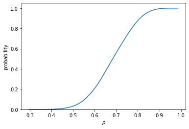
This curve shows that with 40% probability it is the case that \(p \leq 0.65\) (approximately).
Question: calculate the probability that \(p>0.8\) after throwing the coin 20 times (with \(y=14\)).
[hint: use the variable posterior_list.]
answer
np.sum(posterior_list[-2]>0.8)/len(posterior_list[-2])
0.1085
Let’s consider last week’s example of throwing a coin 20 times and seeing 14 times head. We want to know the posterior distribution of \(p\), the probability of head, after seeing the data, where data equals \(n=20, y =14\). As before our prior is uniform: \(f(p)=1\) for \(p \in [0,1]\).
We can program this as follows:
range_p = np.linspace(0,1,50)
prior = np.ones_like(range_p)
likelihood = sc.stats.binom.pmf(14,20,range_p)
posterior = likelihood*prior/np.sum(likelihood*prior)
plt.plot(range_p,posterior);

- Using a grid to calculate the posterior distribution becomes extremely slow in higher dimensions; i.e. when there are 4 parameters or more;
- Markov Chain Monte Carlo (MCMC) algorithms are far more efficient: https://chi-feng.github.io/mcmc-demo/
- we know that “eventually” they converge to the true posterior distribution
Simulated data
To get an idea how Bayesian analysis works, we use our “old trick”: generate data and then estimate a model on the generated data to see whether we can recover the true underlying parameters.
def generating_data(a1 = 1, a2 = -1,b = 3, n=100):
x1 = np.random.normal(0,1,size=n)
x2 = np.random.normal(0,1,size=n)
noise = np.random.normal(0,1,size=n)
y = b + a1 * x1 + a2 * x2 + noise
df = pd.DataFrame({'y':y, 'x1':x1, 'x2':x2})
return df
df = generating_data()
Specifying a model
The parameters of the model (slope1,slope2,constant,sigma) are themselves stochastic variables and we need to specify their prior distributions.
with pm.Model() as model_simulated_data:
constant = pm.Normal('constant', 0, 3)
slope1 = pm.Normal('slope1', 0, 2)
slope2 = pm.Normal('slope2', 0, 2)
sigma = pm.HalfNormal('sigma', 1)
obs = pm.Normal('obs', mu = slope1*df.x1 + slope2*df.x2 + constant,\
sigma = sigma, observed = df.y)
trace = pm.sample()
with model_simulated_data:
ppc_simulated_data = pm.sample_posterior_predictive(trace,\
var_names=['obs'])
Auto-assigning NUTS sampler... Initializing NUTS using jitter+adapt_diag... Multiprocess sampling (4 chains in 4 jobs) NUTS: [sigma, slope2, slope1, constant] Sampling 4 chains, 0 divergences: 100%|██████████| 4000/4000 [00:00<00:00, 4934.06draws/s] 100%|██████████| 2000/2000 [00:02<00:00, 772.71it/s]
We can visualize the model with its priors. This shows that obs has 100 observations and is normally distributed. In the model, obs is determined by the parameters slope1, slope2, constant, sigma and their prior distributions are provided as well.
# pm.model_to_graphviz(model_simulated_data)
Trace plot and posterior distribution
We plot the trace using pm.plot_trace() and discuss what we learn from it.
First, look at the distributions on the left. Each posterior distribution is –more or less– centered around the values we chose when generating the data.
pm.plot_trace(trace)
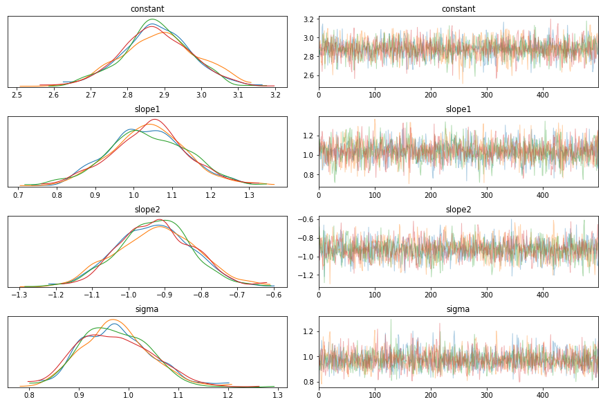
The trace plots on the right side are harder to interpret, but important in understanding whether the sampling process actually worked:
- the plot should be stationary; for example, not trending upwards or downwards
- there should be good mixing which translates into the condensed zig-zagging of the trace;
- the different chains cover the same regions
If you want to better understand how this algorithm works, you can watch Richard McElreath’s lecture on MCMC.
To get some feel for how this works, I recommend that you play around with different parameter values to see how this is then picked up in the posterior distribution. Further, also change the number of observations (\(n\)) in the data to see the effect on the posterior.
Summarizing the posterior distribution
We can also summarize the posterior in a table.
pm.summary(trace)
mean sd hdi_3% hdi_97% mcse_mean mcse_sd ess_mean ess_sd \
constant 2.991 0.108 2.791 3.187 0.002 0.001 2875.0 2871.0
slope1 0.832 0.102 0.643 1.014 0.002 0.001 3168.0 3135.0
slope2 -1.005 0.103 -1.221 -0.831 0.002 0.002 2327.0 2300.0
sigma 1.038 0.076 0.892 1.176 0.002 0.001 1989.0 1952.0
ess_bulk ess_tail r_hat
constant 2875.0 1676.0 1.0
slope1 3119.0 1678.0 1.0
slope2 2329.0 1484.0 1.0
sigma 2051.0 1517.0 1.0
The important thing to observe here is that r_hat should be close to 1.0.
Model fit
To get an idea of the model fit, we use the posterior predictive distribution. This is the distribution of \(y\) for each observation in our data.
We use the numpy function percentile to get the percentiles at 2.5% and 97.5%. In between these we have 95% probability mass.
The vertical lines are drawn by matplotlib’s function vlines.
percentiles = np.percentile(ppc_simulated_data.posterior_predictive['obs'],[2.5,97.5],axis=[0,1]).T
fig, (ax1,ax2) = plt.subplots(1,2, figsize=(10, 5))
ax1.vlines(df.x1,percentiles[:,0],percentiles[:,1],alpha=0.2)
ax1.scatter(df.x1,df.y, color='r')
ax1.set(xlabel='$x_1$', ylabel='$y$');
ax2.vlines(df.x2,percentiles[:,0],percentiles[:,1],alpha=0.2)
ax2.scatter(df.x2,df.y, color='r')
ax2.set(xlabel='$x_2$', ylabel='$y$');
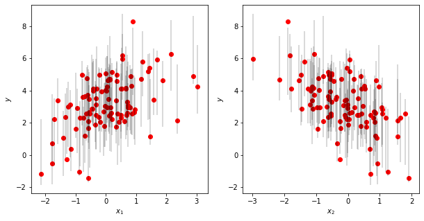
The figure shows that for most observations, the observed values lie in the 95% prediction interval of the model predictions.
Now we will apply this Bayesian technique to real data. This gives us an opportunity to be more precise about how to choose priors for the parameters that we estimate.
Bayesian analysis with real data
df = pd.read_csv('./data/health_data.csv')
df.describe()
Unnamed: 0 year_x Preventable mortality Treatable mortality \
count 448.000000 448.000000 446.000000 446.000000
mean 223.500000 2014.000000 191.783520 110.963924
std 129.470717 2.002236 132.025295 61.740504
min 0.000000 2011.000000 45.910000 40.780000
25% 111.750000 2012.000000 95.860000 70.230000
50% 223.500000 2014.000000 164.055000 85.905000
75% 335.250000 2016.000000 227.407500 126.267500
max 447.000000 2017.000000 660.160000 333.310000
GDP per capita year_y y_QU1 y_QU2 y_QU3 \
count 444.000000 378.0 378.000000 378.000000 378.000000
mean 32714.054054 2015.0 9830.103704 16740.196296 23225.081481
std 26022.327013 0.0 6158.301385 10423.913545 13547.040290
min 5620.000000 2015.0 1491.500000 2997.500000 4072.100000
25% 14710.000000 2015.0 4233.300000 7538.900000 10857.300000
50% 24975.000000 2015.0 8959.400000 15529.200000 22675.800000
75% 39890.000000 2015.0 15468.800000 24832.300000 33983.400000
max 150490.000000 2015.0 25849.300000 47051.500000 58070.200000
y_QU4 y_QU5 high bmi smoking binge drinking
count 378.000000 378.000000 420.000000 420.000000 392.000000
mean 31198.437037 51021.855556 0.150500 0.074433 0.184446
std 17724.428246 28761.101095 0.035153 0.058118 0.110150
min 5854.400000 9909.200000 0.077000 0.000000 0.017000
25% 14587.300000 26053.400000 0.129000 0.031750 0.105750
50% 31432.100000 51597.000000 0.146500 0.056500 0.169000
75% 45565.700000 72190.400000 0.175000 0.107750 0.256500
max 76374.000000 131011.200000 0.267000 0.250000 0.573000
As you can see, the counts for the different values differ. This implies that we have missing values for variables.
To get an idea of our data, let’s plot mortality against GDP per capita.
import matplotlib.colors as colors
import matplotlib as mpl
import matplotlib.cm as mplcm
import numpy as np
import statsmodels.api as sm
plt.style.use('seaborn-dark-palette')
NUM_COLORS = 24
cm = plt.get_cmap('tab20b')
cNorm = colors.Normalize(vmin=0, vmax=NUM_COLORS-1)
scalarMap = mplcm.ScalarMappable(norm=cNorm, cmap=cm)
mpl.rcParams['axes.prop_cycle'] = mpl.cycler(color=([scalarMap.to_rgba(i) for\
i in range(NUM_COLORS)]))
fig, (ax1, ax2) = plt.subplots(1, 2, sharey=True, sharex=True,figsize=(13,5))
for country in df.country.unique():
mask = (df.country == country)
ax1.scatter(df[mask&(df.sex=='F')]['GDP per capita'],\
df[mask&(df.sex=='F')]['Treatable mortality'], label = country)
ax2.scatter(df[mask&(df.sex=='M')]['GDP per capita'],\
df[mask&(df.sex=='M')]['Treatable mortality'], label = country)
ax1.set_yscale('log')
ax1.set_xscale('log')
ax1.set_xlabel('GDP per capita')
ax2.set_xlabel('GDP per capita')
ax1.set_ylabel('Treatable mortality')
ax1.set_title('Female')
ax2.set_title('Male')
plt.tight_layout()
plt.legend(bbox_to_anchor=(1.05, 1), loc='upper left', borderaxespad=0.);
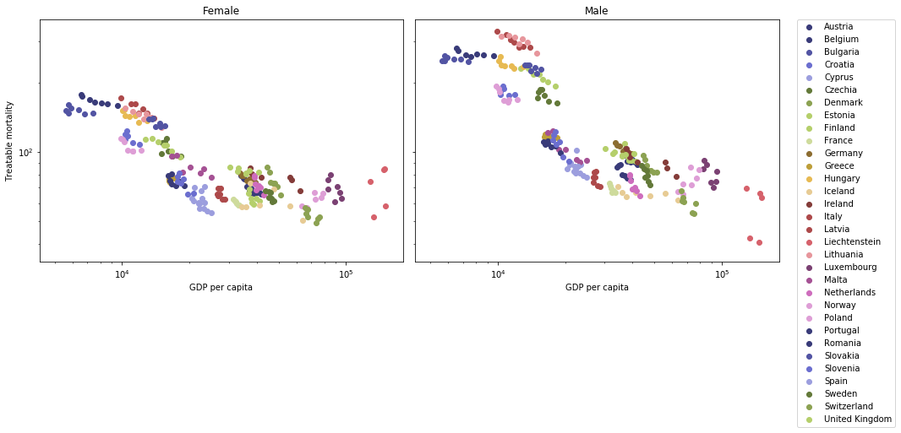
This figure suggests a linear relation between log GDP per capita and log treatable mortality as a reasonable approximation.
We measure income inequality in our data set as:
\begin{equation} \label{eq:19} \text{inequality} = \ln\left(\sum_{i=1}^5 \phi_i Y_i \right) - \sum_{i=1}^5 \phi_i \ln(Y_i) \end{equation}where the fraction of people in income category \(i\) denoted \(\phi_i = 0.2\) as we have data on income quintiles. The higher this expression, the more unequal the income distribution in a country is.
Question: add the variable inequality to the dataframe using the definition above.
[hint: use the quintiles y_QU1,...,y_QU5 in the data with \(\phi_i = 0.2\) for \(i=1,...,5\).]
Answer inequality
income_quantiles = ['y_QU1','y_QU2','y_QU3','y_QU4','y_QU5']
Inequality = np.log(df[income_quantiles].mean(axis=1))-\
(np.log(df[income_quantiles])).mean(axis=1)
df['inequality'] = Inequality
df.drop(income_quantiles,axis=1,inplace=True)
df.head()
Unnamed: 0 country year_x sex Preventable mortality \ 0 0 Austria 2011 F 95.29 1 1 Austria 2011 M 248.50 2 2 Austria 2012 F 96.16 3 3 Austria 2012 M 252.28 4 4 Austria 2013 F 93.22 Treatable mortality GDP per capita year_y high bmi smoking \ 0 67.41 36970.0 2015.0 0.113 0.083 1 96.86 36970.0 2015.0 0.146 0.141 2 69.72 37820.0 2015.0 0.113 0.083 3 91.45 37820.0 2015.0 0.146 0.141 4 66.84 38210.0 2015.0 0.113 0.083 binge drinking inequality 0 0.129 0.123411 1 0.249 0.123411 2 0.129 0.123411 3 0.249 0.123411 4 0.129 0.123411
Missing values (the wrong way)
We have missing values in the data. First, we will deal with these in a simple (but incorrect) way: simply delete rows from the dataframe that contain a missing value.
We use dropna() to drop all rows that have missing values. The describe statement shows that all variables have the same number of observations now.
df_small = df.dropna()
Standardizing variables
Just as with neural networks, we can help the algorithm by standardizing our variables:
def standardize(x):
return (x-x.mean())/x.std()
log_mortality = standardize(np.log(df_small['Treatable mortality']))
gdp = standardize(np.log(df_small['GDP per capita']))
inequality = standardize(df_small['inequality'])
high_bmi = standardize(df_small['high bmi'])
smoking = standardize(df_small['smoking'])
binge_drinking = standardize(df_small['binge drinking'])
gender = df_small['sex']=='F'
Just to be sure: note the order in which we do this: for GDP and mortality, we first take the log and then we standardize. If you do not understand why we do it this way, try for yourself: first standardize and then take the log.
Question: Complete the specification of the model
We model log_mortality as being normally distributed with expectation \(\mu\) as specified below and standard deviation \(\sigma\).
Since log mortality is standardized, we model the prior for the constant as being normally distributed with 0 mean and standard deviation equal to 1. We specify one \(\sigma_{prior}\) for all b_ coefficients. The priors for these coefficients are normally distributed with mean zero and standard deviation equal to \(\sigma_{prior}\).
To avoid over-fitting, we specify a small value for \(\sigma_{prior}\). This is sometimes called a “seat-belt prior”. Low values for this standard deviation make sure that the model does not get “too excited” about the data. It is comparable to a (high) penalty term in a lasso or ridge regression. But here this is specified as a (conservative) prior. The more observations we have, the smaller the weight of this prior in the posterior. Hence, the model gets “more easily excited” if there are more data points, which is intuitive
with pm.Model() as normal:
## priors on coefficients
constant = pm.Normal('constant', mu = 0.0, sigma = 1.0)
σ_prior = 0.1
### complete the priors
## model
μ = constant + b_female * gender + b_gdp*gdp +\
b_inequality * inequality + b_smoking * smoking +\
b_high_bmi * high_bmi + b_binge_drinking * binge_drinking +\
b_female_gdp * gdp * gender
σ = pm.HalfNormal('σ', 1)
mortality = pm.Normal('mortality', μ, σ, observed=log_mortality)
trace_normal = pm.sample(2000, tune=1000)
Question: generate the posterior predictive distribution for the variable mortality.
answer
with pm.Model() as normal:
## priors on coefficients
constant = pm.Normal('constant', mu = 0.0, sigma = 1.0)
σ_prior = 0.1
b_gdp = pm.Normal('b_gdp', mu = 0, sigma = σ_prior)
b_inequality = pm.Normal('b_inequality',mu=0,sigma=σ_prior)
b_smoking= pm.Normal('b_smoking',mu = 0, sigma = σ_prior)
b_high_bmi = pm.Normal('b_high_bmi',mu = 0, sigma = σ_prior)
b_binge_drinking = pm.Normal('b_binge_drinking',mu = 0, sigma = σ_prior)
b_female = pm.Normal('b_female',mu = 0, sigma = σ_prior)
b_female_gdp = pm.Normal('b_female_gdp',mu = 0, sigma = σ_prior)
## model
μ = constant + b_female * gender + b_gdp*gdp + b_inequality * inequality +\
b_smoking * smoking + b_high_bmi * high_bmi +\
b_binge_drinking * binge_drinking + b_female_gdp * gdp * gender
σ = pm.HalfNormal('σ', 1)
mortality = pm.Normal('mortality', μ, σ, observed=log_mortality)
trace_normal = pm.sample(2000, tune=1000)
with normal:
ppc_normal = pm.sample_posterior_predictive(trace_normal,\
var_names=["mortality"])
Auto-assigning NUTS sampler... Initializing NUTS using jitter+adapt_diag... Multiprocess sampling (4 chains in 4 jobs) NUTS: [σ, b_female_gdp, b_female, b_binge_drinking, b_high_bmi, b_smoking, b_inequality, b_gdp, constant] Sampling 4 chains, 0 divergences: 100%|██████████| 12000/12000 [00:04<00:00, 2473.50draws/s] 100%|██████████| 8000/8000 [00:07<00:00, 1032.59it/s]
We can visualize the model.
# pm.model_to_graphviz(normal)
Question: summarize the posterior distribution in a table; check the values for r_hat.
answer
variables_health = ['b_female','b_gdp', 'b_female_gdp', 'b_inequality',\
'b_smoking', 'b_high_bmi', 'b_binge_drinking']
pm.summary(trace_normal.posterior,variables_health)
Check fit of the model
If you followed our naming suggestions above, you should be able to run the code below without errors to see the fit of the model. For most country/year/gender combinations the observation (dot) falls within the 95% prediction interval (vertical lines).
mask_female = (df_small.sex=='F')
mask_male = (df_small.sex=='M')
percentiles = np.percentile(ppc_normal.posterior_predictive.mortality,\
[2.5,97.5],axis=[0,1])
plt.style.use('seaborn-dark-palette')
NUM_COLORS = 24
cm = plt.get_cmap('tab20b')
cNorm = colors.Normalize(vmin=0, vmax=NUM_COLORS-1)
scalarMap = mplcm.ScalarMappable(norm=cNorm, cmap=cm)
mpl.rcParams['axes.prop_cycle'] = mpl.cycler(color=([scalarMap.to_rgba(i)\
for i in range(NUM_COLORS)]))
fig, (ax1, ax2) = plt.subplots(1, 2, sharey=True, sharex=True,figsize=(13,5))
for country in df_small.country.unique():
mask = (df_small.country == country)
ax1.vlines(gdp[mask_female&mask],percentiles[0,:][mask_female&mask],\
percentiles[1,:][mask_female&mask],\
color = next(ax1._get_lines.prop_cycler)['color'],alpha=0.3)
ax1.scatter(gdp[mask&(df_small.sex=='F')],\
log_mortality[mask&(df_small.sex=='F')], label = country)
ax2.vlines(gdp[mask_male&mask],percentiles[0,:][mask_male&mask],\
percentiles[1,:][mask_male&mask],\
color = next(ax2._get_lines.prop_cycler)['color'],alpha=0.3)
ax2.scatter(gdp[mask&(df_small.sex=='M')],\
log_mortality[mask&(df_small.sex=='M')], label = country)
ax1.set_xlabel('Log GDP per capita (standardized)')
ax2.set_xlabel('Log GDP per capita (standardized)')
ax1.set_ylabel('Log treatable mortality (standardized)')
ax1.set_title('Female')
ax2.set_title('Male')
plt.tight_layout()
plt.legend(bbox_to_anchor=(1.05, 1), loc='upper left', borderaxespad=0.);
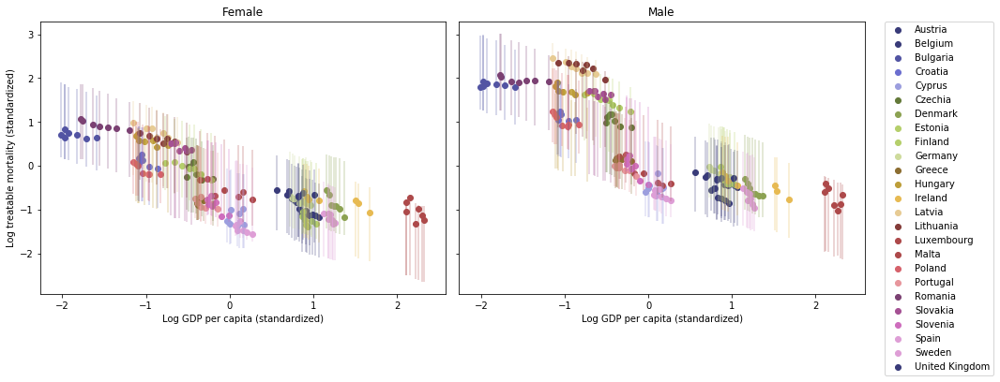
Missing data (the right way)
Above we deleted all rows that feature a missing value. This is one extreme and it is not optimal.
The other extreme is another common practice that is also not correct: interpolating the missing values.
The Bayesian way to deal with missing values is to model that they are drawn from a distribution. Since we work with standardized variables, we model that a missing value is drawn from a normal distribution with mean 0 and standard deviation equal to 1.
In order to use missing values in pymc3, we use so called masked numpy arrays (see https://numpy.org/doc/stable/reference/maskedarray.html).
Consider the following example.
x = np.ma.array([1, 2, np.nan], mask=[0, 0, 1])
print("x in compressed/readable format: {}".format(x.compressed()))
print("x in raw format: ")
x
x in compressed/readable format: [1. 2.]
x in raw format:
masked_array(data=[1.0, 2.0, --],
mask=[False, False, True],
fill_value=1e+20)
The mask ([False, False, True]) in the example above, indicates which values are missing (True) and which values are there (False). This additional information allows pymc3 to figure out that there are missing values in the data which need to be treated differently.
Let’s load the data.
df = pd.read_csv('./data/health_data.csv')
df.dropna(subset=['Treatable mortality'],inplace=True)
income_quantiles = ['y_QU1','y_QU2','y_QU3','y_QU4','y_QU5']
df['inequality']= np.log(df[income_quantiles].mean(axis=1))-\
(np.log(df[income_quantiles])).mean(axis=1)
df.drop(income_quantiles,axis=1,inplace=True)
def standardize(x):
return (x-x.mean())/x.std()
log_mortality = standardize(np.log(df['Treatable mortality']))
gender = df['sex']=='F'
We define a new function to standardize our variables which can handle missing values. This function can work with masked arrays (ma).
def standardize_ma(x):
x_ma = np.ma.masked_invalid(x)
return (x_ma-x_ma.mean())/x_ma.std()
gdp = standardize_ma(np.log(df['GDP per capita']))
inequality = standardize_ma(df['inequality'])
high_bmi = standardize_ma(df['high bmi'])
smoking = standardize_ma(df['smoking'])
binge_drinking = standardize_ma(df['binge drinking'])
The code for our model is as follows. Note that we use the observed keyword also for the explanatory variables with missing values.
with pm.Model() as normal_missing:
## priors on coefficients
constant = pm.Normal('constant', mu = 0.0, sigma = 1.0)
σ_prior = 0.1
b_gdp = pm.Normal('b_gdp', mu = 0, sigma = σ_prior)
b_inequality = pm.Normal('b_inequality',mu=0,sigma=σ_prior)
b_smoking= pm.Normal('b_smoking',mu = 0, sigma = σ_prior)
b_high_bmi = pm.Normal('b_high_bmi',mu = 0, sigma = σ_prior)
b_binge_drinking = pm.Normal('b_binge_drinking',mu = 0, sigma = σ_prior)
b_female = pm.Normal('b_female',mu = 0, sigma = σ_prior)
b_female_gdp = pm.Normal('b_female_gdp',mu = 0, sigma = σ_prior)
## missing variables
Gdp = pm.Normal('Gdp', mu = 0, sigma = 1.0, observed = gdp)
Smoking = pm.Normal('Smoking', mu = 0, sigma = 1.0, observed = smoking)
Binge_drinking = pm.Normal('Binge_drinking', mu = 0, sigma = 1.0,\
observed = binge_drinking)
High_bmi = pm.Normal('High_bmi', mu = 0, sigma = 1.0, observed = high_bmi)
Inequality = pm.Normal('Inequality', mu = 0, sigma = 1.0,\
observed = inequality)
## model
μ = constant + b_inequality * Inequality + b_smoking * Smoking +\
b_high_bmi * High_bmi + b_binge_drinking * Binge_drinking +\
b_gdp * Gdp + b_female_gdp * Gdp * gender+ b_female * gender
σ = pm.HalfNormal('σ', 1)
mortality = pm.Normal('mortality', μ, σ, observed=log_mortality)
trace_normal_missing = pm.sample()
Auto-assigning NUTS sampler... Initializing NUTS using jitter+adapt_diag... Multiprocess sampling (4 chains in 4 jobs) NUTS: [σ, Inequality_missing, High_bmi_missing, Binge_drinking_missing, Smoking_missing, Gdp_missing, b_female_gdp, b_female, b_binge_drinking, b_high_bmi, b_smoking, b_inequality, b_gdp, constant] Sampling 4 chains, 0 divergences: 100%|██████████| 4000/4000 [00:06<00:00, 594.68draws/s] 100%|██████████| 2000/2000 [00:02<00:00, 686.56it/s]
Question: summarize the posterior distribution with a table
Complete the following code block. In the summary, we are interested in the coefficients variables_health.
variables_health = ['b_female','b_gdp', 'b_female_gdp', 'b_inequality',\
'b_smoking', 'b_high_bmi', 'b_binge_drinking']
pm.summary(...,variables_health)
answer
Check the values for r_hat.
variables_health = ['b_female','b_gdp', 'b_female_gdp', 'b_inequality',\
'b_smoking', 'b_high_bmi', 'b_binge_drinking']
pm.summary(trace_normal_missing.posterior,variables_health)
Question: provide the trace plots for variables_health.
Check that the trace plots satisfy the criteria discussed above.
answer
pm.plot_trace(trace_normal_missing,var_names=variables_health);
how do the missing values work in the posterior?
print(gdp.shape)
print(trace_normal_missing.posterior.Gdp.shape)
print(gdp[0])
print(trace_normal_missing.posterior.Gdp[0,:10,0].values)
(448,) (4, 1000, 448) 0.5323352480715294 [0.53233525 0.53233525 0.53233525 0.53233525 0.53233525 0.53233525 0.53233525 0.53233525 0.53233525 0.53233525]
np.where(gdp.isna())
| array | ((238 239 240 241)) |
print(gdp[238])
print(trace_normal_missing.posterior.Gdp[0,:10,238].values)
Altair
df = pd.read_csv('./data/health_data.csv')
df.describe()
You can open the file gdp_mortality.html in a web browser. You can add it to a website etc. You can use the slider to select a year, zoom in and out of the graph, hover over a point to see the country.
df.rename({'year_x':'year'},inplace=True,axis=1)
select_year = alt.selection_single(
name='Select', fields=['year'], init={'year': 2011},
bind=alt.binding_range(min=2011, max=2017, step=1)
)
df['log gdp'] = np.log(df['GDP per capita'])
df['log mortality'] = np.log(df['Treatable mortality'])
df['Gender'] = df['sex'].replace({'F':'Female','M':'Male'})
figure = alt.Chart(df).mark_point(filled=True,size=50).encode(
alt.X('log gdp',title='GDP per capita (in logs)',scale=alt.Scale(domain=[9,12])),
alt.Y('log mortality',title='Treatable mortality (in logs)',scale=alt.Scale(domain=[4,6])),
color='country',
column='Gender',
tooltip=['country']
).configure_axis(
grid=False
).configure_view(
strokeWidth=0
).add_selection(select_year).transform_filter(select_year).interactive()
figure.save('./figures/gdp_mortality.html')
Gaussian Process
The idea of a Gaussian Process (GP) is that we draw from a multivariate normal distribution; that is, we do not draw one value but we draw a string of values (a vector) from the distribution. Hence, we need to specify the correlation between these different values; e.g. what is the correlation between the 1st and 5th value. This correlation is determined by the co-variance matrix of the multivariate distribution. The GP’s kernel determines this co-variance matrix.
To illustrate the GP, let’s create our own data.
n = 100
x = np.linspace(0, 6*np.pi, n)
def time_series(x):
return 0.4 * x + np.sin(x)
y = time_series(x) + np.random.normal(0, 0.5, n)
plt.scatter(x, y);
GP with exponentiated quadratic kernel
A kernel specifies the correlation between two elements in the series that we have. In a time series this boils down to the correlation between the observation at time \(t\) and time \(t'\).
The exact expression for the correlation between observations at \(t\) and \(t'\) is given by:
\begin{equation} \label{eq:5b} k(t,t') = e^{-\frac{(t-t')^{2}}{2\ell^{2}}} \end{equation}
In the code block we specify our prior for \(\ell\) (ls) as \(h\). The kernel is written as pm.gp.cov.ExpQuad() where we specify that our input variable (time) X is one dimensional (as a tensor).
The \(x\) variable needs to be turned into a column vector \(X\).
Finally, the last statement in this code block looks different from what we saw above with obs = pm.Normal('obs', mu, sigma, observed = y). This is due to the way GP’s are implemented in pymc3.
X = x.reshape(n,1)
with pm.Model() as timeseries_kernel:
h = pm.Gamma('h', 3, 1.0)
c = pm.gp.cov.ExpQuad(1, ls=h)
gp = pm.gp.Marginal(cov_func=c)
sigma = pm.HalfCauchy('sigma', 1.0)
y_est = gp.marginal_likelihood('y_est', X=X, y=y, noise=sigma)
Sampling from GP’s with MCMC –as we did above– is sometimes slow. Here we sample with ADVI. The idea of ADVI is to approximate the posterior distribution with a combination of well known distributions.
We check whether the fitting went well by plotting the so called “ELBO” (evidence lower bound) plot.
with timeseries_kernel:
inference = pm.ADVI()
approx = pm.fit(20000)
plt.plot(approx.hist);
Average Loss = 135.43: 100%|██████████| 20000/20000 [01:13<00:00, 270.59it/s] Finished [100%]: Average Loss = 135.43
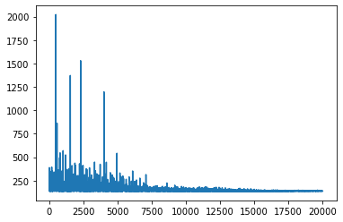
Now we can generate samples from approx which we defined above as approx = pm.fit().
We specify the range over which we want to predict xp and the number of samples that we want for the prediction, n_samples.
trace = approx.sample(draws=5000)
Note that np_c is a quick way to add a dimension to an array.
n_samples = 100
xp = np.c_[np.linspace(0, 6*np.pi, n_samples)]
print(np.linspace(0, 6*np.pi, n_samples).shape)
print(np.linspace(0, 6*np.pi, n_samples)[:,None].shape)
print(xp.shape)
(100,) (100, 1) (100, 1)
Note The code for jupyterlab.uvt.nl is different from the one below:
ppc = pm.sample_posterior_predictive(trace, var_names = ['gpc'], samples = n_samples)ppc_test = pm.sample_posterior_predictive(trace, var_names = ['gpc_test'], samples = n_samples)
with timeseries_kernel:
gpc = gp.conditional('gpc', xp)
ppc = pm.sample_posterior_predictive(trace,\
vars=[gpc], samples=n_samples)
100%|██████████| 100/100 [00:06<00:00, 16.06it/s]
We can plot this in-sample prediction (in grey) together with our observations (red dots).
plt.plot(xp, ppc['gpc'].T, c='grey', alpha=0.2)
plt.scatter(x, y, c='red');
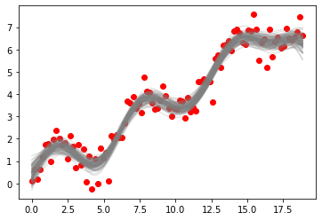
Finally, we can plot out-of-sample predictions. The interval x_test starts where the observations ended and plots a number of periods ahead.
n_samples = 100
x_test = np.c_[np.linspace(6*np.pi, 6.5*np.pi, n_samples)]
with timeseries_kernel:
gpc_test = gp.conditional('gpc_test', x_test)
ppc_test = pm.sample_posterior_predictive(trace,\
vars=[gpc_test], samples=n_samples)
plt.plot(xp, ppc['gpc'].T, c='grey', alpha=0.1)
plt.plot(x_test, ppc_test['gpc_test'].T, c='green', alpha=0.1)
plt.scatter(x, y, c='red');
100%|██████████| 100/100 [00:03<00:00, 28.54it/s]
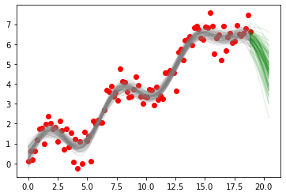
Other Bayesian topics
time series
n = 100
x = np.linspace(0, 6*np.pi, n)
def time_series(x):
return 0.4 * x + np.sin(x)
y = time_series(x) + np.random.normal(0, 0.5, n)
plt.scatter(x, y);
GP with periodic kernel
With a periodic kernel, the expression for this correlation uses something like \(\sin(t-t')\). Hence, this correlation is high when \(\sin\) equals 1. This gives the repetitive or cyclical part in the observations.
The exact expression for the correlation between observations at \(t\) and \(t'\) is given by:
\begin{equation} \label{eq:5} k(t,t') = e^{-\frac{ \sin^2(\pi |t-t' |\frac{1}{T})}{2\ell^{2}}} \end{equation}
Then we add a cyclical and linear component to get gp.
X = x.reshape(n,1)
with pm.Model() as timeseries_periodic:
# Cyclical component
ls = pm.Gamma('ls', 1.0, 0.5)
period = pm.Gamma('period',7,1)
cov = pm.gp.cov.Periodic(input_dim=1, period = period,\
ls=ls)
gp1 = pm.gp.Marginal(cov_func=cov)
# Linear trend.
c = pm.Normal(name='c', mu=0, sigma=1)
gp2 = pm.gp.Marginal(cov_func=pm.gp.cov.Linear(input_dim=1,\
c=c))
# adding the two components
gp = gp1 + gp2
sigma = pm.HalfCauchy('sigma', 0.5)
y_est = gp.marginal_likelihood('y_est', X=X, y=y,\
noise=sigma)
neural network
- Bayesian neural networks are do-able now
- but require a bit of programming
- this will become easier in a year or two
- conceptually it is important to understand what information a neural network provides about uncertainty
- this is part of the “black box” feature of a neural network
- suppose we want to classify pictures with cats and dogs:
- compare two pictures where one is classified as dog with 0.51 prob.; the other with 0.99 probability
- when you run the neural network 1000 times, the latter features probabilities 0.01 and 0.99 each 500 times…
confidence interval
To make clear what a confidence interval is in “standard” (frequentist) econometrics, we will simulate this interval for an example: we draw a sample \(x_1,...,x_n\) from a normal distribution with (unknown) mean \(\mu\) and (known) standard deviation \(\sigma=1\). We calculate the sample mean \(m = \sum x_i/n\) and the 95% confidence interval \([m - 2 \sigma_m, m + 2 \sigma_m]\) where \(\sigma_m = \sigma/\sqrt(n)\) denotes the standard deviation of the sample mean \(m\).
def interval_95(X,σ):
"""X should be of the form: number of repetitions (in rows) times sample (in columns)"""
mean = X.mean(axis=1) # for each row (repetition) take the mean across the sample
σ_m = σ/np.sqrt(X.shape[1])
return np.array([mean - 2 * σ_m, mean + 2 * σ_m])
μ = 100
σ = 10
repetions = 100_000
n_sample = 9
X = np.random.normal(μ,σ,size = (repetions,n_sample))
Question: calculate in which percentage of cases \(\mu\) lies in this 95% interval
Note that \(\mu\) does not vary when we are doing these simulations; it stays fixed at \(\mu=100\).
Answer: confidence interval
intervals = interval_95(X,σ)
test = (intervals[0] < μ) &(μ < intervals[1])
print(np.sum(test)/len(test))
0.95449
There is no randomness with respect to \(\mu\). But we do draw different samples and hence find different sample means. The different sample means generate different confidence intervals. We are calculating how often these (stochastic) confidence intervals actually contain \(\mu\).
Course takeaway: simulation as a bridge to machine learning
These lectures show that the gap between classical econometrics and modern machine learning is smaller than it appears. OLS, the workhorse of econometrics, is just a specific loss function minimised by a simple algorithm. Ridge and lasso are OLS with an extra line of code. Neural networks are deeper versions of the same idea.
By building everything from scratch using simulation and optimisation, you develop a type of understanding that no amount of reading about formulas can give. You see directly what the parameters do, how the estimates vary, and what happens when assumptions break down.